Part 2 · Signs · Chapter 2C
Warning Signs and Object Markers
Design, sizing, placement, and application requirements for the W-series warning signs, supplemental warning plaques, and object markers used to alert road users to unexpected conditions on California streets and highways.
2C.01 Application of Warning Signs
- 01The use of warning signs shall be based on an engineering study or on engineering judgment.
- 02Warning signs shall be retroreflective or illuminated (see Section 2A.21).
- 03The use of warning signs should be kept to a minimum, as unnecessary use tends to breed disrespect for all signs. Where the condition or activity is seasonal or temporary, the warning sign should be removed or covered when the condition or activity does not exist.
In practice: because warning-sign overuse is explicitly called out as counterproductive, an engineer asked to add a warning sign should first confirm the condition is genuinely unexpected to a reasonably alert road user, not merely a generic hazard.
2C.02 Design of Warning Signs
- 01Except as provided in Paragraph 2 of this Section, or unless specifically designated otherwise, all warning signs shall be diamond-shaped (a square with one diagonal vertical) with a black legend and border on a yellow background. Warning signs shall be designed per the sizes, shapes, colors, and legends in the "Standard Highway Signs" publication (see Section 1A.05) and Caltrans' California Sign Specifications.
- 03A shape other than diamond is typical for overhead installations.
- 04Section 2A.05 describes allowable methods to accommodate a diamond-shaped warning sign where lateral space is constrained — urban locations, narrow median barriers, or adjacent retaining walls — including displaying the standard legend in a vertically oriented rectangle.
- 05Use of LEDs in the border and legend of warning signs is described in Section 2A.12.
- 06Except for symbols on warning signs, minor design modifications may be made provided the essential appearance characteristics are met. Modifications may be made to the symbols on combined horizontal alignment/intersection signs (Section 2C.09) and intersection warning signs (Section 2C.41) to approximate the geometric configuration of the intersecting roadway(s).
- 07Word-message warning signs other than those provided in this Manual may be developed by Caltrans (per CVC § 21400) and installed by State or local highway agencies for conditions not otherwise addressed by standard signs (see Section 2A.04).
- 08Warning signs regarding conditions associated with pedestrians, bicyclists, and playgrounds, and their related plaques, may have a black legend and border on a yellow or fluorescent yellow-green background.
- 09Warning signs regarding conditions associated with school buses and schools, and their related supplemental plaques, shall have a black legend and border on a fluorescent yellow-green background (see Section 7B.01).
- 10Consistent with Section 4S.03, a Warning Beacon may be used in combination with a standard warning sign.
- 11Refer to Section 2A.09 for the use of educational plaques.
2C.03 Size of Warning Signs and Plaques
- 03Except as provided in Paragraph 5, the minimum size for all diamond-shaped warning signs facing traffic on a multi-lane conventional road where the posted speed limit is higher than 35 mph shall be 36 x 36 inches.
- 04The minimum size for supplemental warning plaques not included in Table 2C-1 shall be as shown in Table 2C-2.
- 05If a diamond-shaped warning sign is placed on the left-hand side of a multi-lane roadway to supplement the same sign on the right-hand side, the minimum size in the Single Lane column of Table 2C-1 may be used.
- 06Signs and plaques larger than those in Tables 2C-1 and 2C-2 may be used (see Section 2A.11).
- 07The minimum size for diamond-shaped warning signs facing traffic on exit and entrance ramps at major interchanges connecting an Expressway or Freeway with an Expressway or Freeway (see Section 2E.11) should be the size shown for the mainline roadway classification. If no size is given in the Freeway column, use the Expressway size; if neither is given, use the Oversized size.
- 08The minimum size for diamond-shaped warning signs facing traffic on exit and entrance ramps at all other interchanges (see Section 2E.11) should be 36 x 36 inches.
- 09The typical size of warning signs on low-volume rural roads with posted speed limits of 30 mph or less should follow the Minimum column of Table 2C-1.
| Sign or Plaque | Designation | Section | Conv. Single Lane | Conv. Multi-Lane | Expressway | Freeway | Minimum | Oversized |
|---|---|---|---|---|---|---|---|---|
| Horizontal Alignment | W1-1,2,3,4,5 | 2C.07 | 30x30* | 36x36 | 36x36 | 36x36 | — | 48x48** |
| One-Direction Large Arrow | W1-6 | 2C.10 | 48x24 | 48x24 | 60x30 | 60x30 | — | 60x30 |
| Two-Direction Large Arrow | W1-7 | 2C.43 | 48x24 | 48x24 | — | — | — | 60x30 |
| Chevron Alignment | W1-8 | 2C.08 | 18x24 | 18x24 | 30x36 | 36x48 | — | 24x30 |
| Combination Horizontal Alignment/Intersection | W1-10,10a-10e | 2C.09 | 36x36 | 36x36 | 36x36 | 48x48 | — | — |
| Hairpin Curve | W1-11 | 2C.07 | 30x30 | 30x30 | 36x36 | 48x48 | — | 48x48 |
| Truck Rollover | W1-13 | 2C.11 | 36x36 | 36x36 | 36x36 | 48x48 | — | 48x48 |
| 270-degree Curve | W1-15 | 2C.07 | 30x30 | 30x30 | 36x36 | 48x48 | — | 48x48 |
| Intersection Warning | W2-1,2,3,3a,4,5,6,7,8 | 2C.41 | 30x30 | 30x30 | 36x36 | — | 24x24 | 48x48 |
| Stop, Yield, Signal Ahead | W3-1,2,3 | 2C.35 | 30x30 | 30x30 | 48x48 | 48x48 | 30x30 | — |
| Be Prepared to Stop | W3-4 | 2C.35 | 36x36 | 36x36 | 48x48 | 48x48 | 30x30 | — |
| Reduced Speed Limit Ahead | W3-5 | 2C.40 | 36x36 | 36x36 | 48x48 | 48x48 | — | — |
| XX MPH Speed Zone Ahead | W3-5a | 2C.40 | 36x36 | 36x36 | 48x48 | 48x48 | — | — |
| Variable Speed Zone Ahead | W3-5b | 2C.40 | 36x36 | 36x36 | 48x48 | 48x48 | — | — |
| XX MPH Truck Speed Zone Ahead | W3-5c | 2C.40 | 36x36 | 36x36 | 48x48 | 48x48 | — | — |
| Draw Bridge | W3-6 | 2C.36 | 36x36 | 36x36 | 48x48 | — | — | 60x60 |
| Ramp Meter Ahead | W3-7 | 2C.37 | 36x36 | 36x36 | — | — | — | — |
| Ramp Metered When Flashing | W3-8 | 2C.37 | 36x36 | 36x36 | — | — | — | — |
| Merge | W4-1 | 2C.45 | 36x36 | 36x36 | 48x48 | 48x48 | 30x30* | — |
| Lane Ends | W4-2 | 2C.47 | 36x36 | 36x36 | 48x48 | 48x48 | 30x30* | — |
| Added Lane | W4-3 | 2C.46 | 36x36 | 36x36 | 48x48 | 48x48 | 30x30* | — |
| Cross Traffic Does Not Stop (plaque) | W4-4P | 2C.66 | 24x12 | 24x12 | 36x18 | — | — | 48x24 |
| Traffic From Left (Right) Does Not Stop (plaque) | W4-4aP | 2C.66 | 24x12 | 24x12 | 36x18 | — | — | 48x24 |
| Oncoming Traffic Does Not Stop (plaque) | W4-4bP | 2C.66 | 24x12 | 24x12 | 36x18 | — | — | 48x24 |
| Entering Roadway Merge | W4-5 | 2C.45 | 36x36 | 36x36 | 48x48 | 48x48 | — | — |
| No Merge Area (plaque) | W4-5aP | 2C.45 | 18x24 | 18x24 | 24x30 | 24x30 | — | — |
| Entering Roadway Added Lane | W4-6 | 2C.46 | 36x36 | 36x36 | 48x48 | 48x48 | — | — |
| Heavy Merge from Right (Left) | W4-7 | 2C.49 | 36x36 | 36x36 | 48x48 | 48x48 | — | — |
| Road Narrows | W5-1 | 2C.17 | 36x36 | 36x36 | 48x48 | 48x48 | 30x30* | — |
| Narrow Bridge | W5-2 | 2C.18 | 36x36 | 36x36 | 48x48 | 48x48 | 30x30* | — |
| Narrow Underpass | W5-2a | 2C.18 | 36x36 | 36x36 | 48x48 | 48x48 | 30x30* | — |
| One Lane Bridge | W5-3 | 2C.19 | 36x36 | 36x36 | 48x48 | 48x48 | 30x30* | — |
| One Lane Underpass | W5-3a | 2C.19 | 36x36 | 36x36 | 48x48 | 48x48 | 30x30* | — |
| Divided Highway | W6-1 | 2C.20 | 36x36 | 36x36 | 48x48 | 48x48 | — | — |
| Divided Highway Ends | W6-2 | 2C.21 | 36x36 | 36x36 | 48x48 | 48x48 | — | — |
| Two-Way Traffic | W6-3 | 2C.51 | 36x36 | 36x36 | 48x48 | 48x48 | — | — |
| Two-Way Traffic (3-Lane) | W6-5 | 2C.52 | 36x36 | 36x36 | 48x48 | — | — | — |
| Two-Way Traffic (3-Lane) | W6-5a | 2C.52 | 36x36 | 36x36 | 48x48 | — | — | — |
| Hill | W7-1 | 2C.14 | 30x30* | 36x36 | 36x36 | 36x36 | 24x24* | 48x48 |
| Hill with Grade | W7-1a | 2C.14 | 30x30* | 36x36 | 36x36 | 36x36 | 24x24* | 48x48 |
| Use Low Gear (plaque) | W7-2P | 2C.64 | 24x18 | 24x18 | — | — | — | — |
| Trucks Use Lower Gear (plaque) | W7-2bP | 2C.64 | 24x18 | 24x18 | — | — | — | — |
| XX% Grade (plaque) | W7-3P | 2C.64 | 24x18 | 24x18 | — | — | — | — |
| Next XX Miles (plaque) | W7-3aP | 2C.61 | 24x18 | 24x18 | — | — | — | — |
| XX% Grade, XX Miles (plaque) | W7-3bP | 2C.64 | 24x18 | 24x18 | — | — | — | — |
| Runaway Truck Ramp XX Miles | W7-4 | 2C.15 | 84x48 | 84x48 | 120x72 | 120x72 | — | — |
| Runaway Truck Ramp Entrance Direction | W7-4b | 2C.15 | 84x54 | 84x54 | 120x78 | 120x78 | — | — |
| Truck Escape Ramp | W7-4c | 2C.15 | 78x60 | 78x60 | 78x60 | 78x60 | — | — |
| Sand, Gravel, Paved (plaques) | W7-4dP,4eP,4fP | 2C.15 | 24x12 | 24x12 | 24x12 | 24x12 | — | — |
| Hill Blocks View | W7-6 | 2C.16 | 30x30* | 36x36 | 36x36 | — | — | 48x48 |
| Bump or Dip | W8-1,2 | 2C.26 | 30x30* | 36x36 | 36x36 | 48x48 | 24x24* | 48x48 |
| Pavement Ends | W8-3 | 2C.28 | 36x36 | 36x36 | 48x48 | — | 30x30* | — |
| Soft Shoulder | W8-4 | 2C.29 | 36x36 | 36x36 | 48x48 | 48x48 | 24x24* | 48x48 |
| Slippery When Wet | W8-5 | 2C.30 | 30x30* | 36x36 | 36x36 | 48x48 | 24x24* | 48x48 |
| Road Condition (plaques) | W8-5P,5bP,5cP | 2C.30 | 24x18 | 24x18 | 30x24 | 36x30 | — | 36x30 |
| Ice (plaque) | W8-5aP | 2C.30 | 24x12 | 24x12 | 30x18 | 30x18 | — | — |
| Truck Crossing | W8-6 | 2C.54 | 36x36 | 36x36 | 36x36 | 48x48 | 24x24* | 48x48 |
| Loose Gravel | W8-7 | 2C.30 | 36x36 | 36x36 | 36x36 | — | 24x24* | 48x48 |
| Rough Road | W8-8 | 2C.30 | 36x36 | 36x36 | 36x36 | 48x48 | 24x24* | 48x48 |
| Low Shoulder | W8-9 | 2C.29 | 36x36 | 36x36 | 36x36 | 48x48 | 24x24* | 48x48 |
| Uneven Lanes | W8-11 | 2C.30 | 36x36 | 36x36 | 36x36 | 48x48 | — | 48x48 |
| No Center Line | W8-12 | 2C.32 | 36x36 | 36x36 | 36x36 | 48x48 | — | — |
| Bridge Ices Before Road | W8-13 | 2C.30 | 36x36 | 36x36 | 36x36 | 48x48 | 24x24* | 48x48 |
| Fallen Rocks | W8-14 | 2C.30 | 30x30* | 36x36 | 36x36 | 48x48 | 24x24* | 48x48 |
| Grooved Pavement | W8-15 | 2C.31 | 30x30* | 36x36 | 36x36 | 48x48 | 24x24* | 48x48 |
| Motorcycle (plaque) | W8-15aP | 2C.31 | 24x18 | 24x18 | 30x24 | 36x30 | — | 36x30 |
| Metal Bridge Deck | W8-16 | 2C.31 | 30x30* | 36x36 | 36x36 | 48x48 | 24x24* | 48x48 |
| Shoulder Drop-Off | W8-17 | 2C.29 | 30x30* | 36x36 | 36x36 | 48x48 | 24x24* | 48x48 |
| Shoulder Drop-Off (plaque) | W8-17P | 2C.29 | 24x18 | 24x18 | 30x24 | 36x30 | — | 36x30 |
| Road May Flood | W8-18 | 2C.34 | 36x36 | 36x36 | 36x36 | 48x48 | 24x24* | 48x48 |
| Depth Gauge | W8-19 | 2C.34 | 12x72 | 12x72 | — | — | — | — |
| Gusty Winds Area | W8-21 | 2C.34 | 36x36 | 36x36 | 36x36 | 48x48 | 24x24* | 48x48 |
| Fog Area | W8-22 | 2C.34 | 36x36 | 36x36 | 36x36 | 48x48 | 24x24* | 48x48 |
| No Shoulder | W8-23 | 2C.29 | 36x36 | 36x36 | 36x36 | 48x48 | 24x24* | 48x48 |
| Shoulder Ends | W8-25 | 2C.29 | 30x30* | 36x36 | 36x36 | 48x48 | 24x24* | 48x48 |
| Road Ends | W8-26 | 2C.24 | 30x30 | 36x36 | — | — | — | — |
| Street Ends | W8-26a | 2C.24 | 30x30 | 36x36 | — | — | — | — |
| Right (Left) Lane Ends | W9-1 | 2C.47 | 36x36 | 36x36 | 36x36 | 48x48 | 30x30* | 48x48 |
| Right (Left) Lane for Exit Only | W9-7 | 2C.50 | 132x72 | 132x72 | 132x72 | 132x72 | — | — |
| Bicycle | W11-1 | 2C.54 | 30x30 | 30x30 | 36x36 | — | — | 48x48 |
| Pedestrian | W11-2 | 2C.55 | 30x30* | 36x36 | 36x36 | — | — | 48x48 |
| Large Animals | W11-3,4,16-22 | 2C.55 | 30x30* | 36x36 | 36x36 | — | 24x24* | 48x48 |
| Farm Vehicle | W11-5 | 2C.54 | 30x30* | 36x36 | 36x36 | — | 24x24* | 48x48 |
| Snowmobile | W11-6 | 2C.55 | 30x30* | 36x36 | 36x36 | — | 24x24* | 48x48 |
| Equestrian | W11-7 | 2C.55 | 30x30* | 36x36 | 36x36 | — | 24x24* | 48x48 |
| Emergency Vehicle | W11-8 | 2C.54 | 30x30* | 36x36 | 36x36 | — | 24x24* | 48x48 |
| Handicapped | W11-9 | 2C.55 | 30x30* | 36x36 | 36x36 | — | — | 48x48 |
| Truck | W11-10 | 2C.54 | 30x30* | 36x36 | 36x36 | — | 24x24* | 48x48 |
| Golf Cart | W11-11 | 2C.54 | 30x30* | 36x36 | 36x36 | — | 24x24* | 48x48 |
| Emergency Signal Ahead (plaque) | W11-12P | 2C.54 | 36x30 | 36x30 | 36x30 | — | — | — |
| Horse-Drawn Vehicle | W11-14 | 2C.54 | 30x30* | 36x36 | 36x36 | — | 24x24* | 48x48 |
| Trail Crossing | W11-15 | 2C.54 | 30x30* | 36x36 | 36x36 | — | 24x24* | 48x48 |
| Trail Crossing | W11-15a | 2C.54 | 30x30* | 36x36 | 36x36 | — | 24x24* | 48x48 |
| Trail Crossing (plaque) | W11-15P | 2C.54 | 24x18 | 24x18 | 30x24 | — | — | 36x30 |
| Double Arrow | W12-1 | 2C.23 | 30x30* | 36x36 | 36x36 | — | — | — |
| Low Clearance Advance | W12-2 | 2C.25 | 36x36 | 36x36 | 48x48 | 48x48 | 30x30* | — |
| Low Clearance Overhead | W12-2a | 2C.25 | 84x24 | 84x24 | 84x24 | 84x24 | — | — |
| Low Clearance - Lane Overhead | W12-2b | 2C.25 | 102x24 | 102x24 | 102x24 | 102x24 | — | — |
| Advisory Speed (plaque) | W13-1P | 2C.59 | 18x18 | 18x18 | 24x24 | 30x30 | — | 30x30 |
| Advisory Speed Confirmation (plaque) | W13-1aP | 2C.59 | 48x15 | 48x15 | 60x18 | 60x18 | 48x15 | 72x24 |
| Advisory Exit or Ramp Speed | W13-2,3 | 2C.12 | 24x30 | 24x30 | 36x48 | 36x48 | — | 48x60 |
| Combination Horiz. Alignment/Advisory Exit or Ramp Speed — Loop | W13-6,7,8,9 | 2C.12 | 24x42 | 24x42 | 36x66 | 36x66 | — | 72x126 |
| Combination Horiz. Alignment/Advisory Exit or Ramp Speed — Turn | W13-10,11 | 2C.12 | 24x36 | 24x36 | 36x54 | 36x54 | — | 48x72 |
| Combination Horiz. Alignment/Advisory Exit or Ramp Speed — Truck Rollover | W13-12,13 | 2C.12 | 24x42 | 24x42 | 36x66 | 36x66 | — | 72x126 |
| Vehicle Speed Feedback Sign | W13-20 | 2C.13 | 24x30 | 30x36 | 36x48 | 48x60 | — | — |
| Vehicle Speed Feedback (plaque) | W13-20aP | 2C.13 | 24x18 | 30x24 | 36x30 | 48x36 | — | — |
| Dead End, No Outlet | W14-1,2 | 2C.24 | 30x30* | 36x36 | 36x36 | — | 24x24* | 48x48 |
| Dead End, No Outlet (with arrow) | W14-1a,2a | 2C.24 | 36x9 | 36x9 | — | — | — | — |
| No Passing Zone | W14-3 | 2C.53 | 48x48x36 | 48x48x36 | 64x64x48 | 64x64x48 | 40x40x30 | 64x64x48 |
| Playground | W15-1 | 2C.56 | 30x30* | 36x36 | 36x36 | — | 24x24* | 48x48 |
| In Road (plaque) | W16-1P | 2C.67 | 18x12 | 18x12 | 24x18 | — | — | 24x18 |
| In Street (plaque) | W16-1aP | 2C.67 | 18x12 | 18x12 | 24x18 | — | — | 24x18 |
| XX Feet (2-line plaque) | W16-2P | 2C.61 | 24x18 | 24x18 | 30x24 | 30x24 | — | 30x24 |
| XX Ft (1-line plaque) | W16-2aP | 2C.61 | 24x12 | 24x12 | — | — | — | 30x18 |
| XX Miles (2-line plaque) | W16-3P | 2C.61 | 30x24 | 30x24 | — | — | — | — |
| XX Miles (1-line plaque) | W16-3aP | 2C.61 | 30x12 | 30x12 | — | — | — | — |
| Next XX Feet (plaque) | W16-4P | 2C.61 | 30x24 | 30x24 | — | — | — | — |
| Supplemental Arrow (plaque) | W16-5P,6P | 2C.62 | 21x15 | 21x15 | — | — | — | 30x21 |
| Diagonal Downward Arrow (plaque) | W16-7P | 2C.63 | 21x15 | 21x15 | — | — | — | 30x21 |
| Dual Downward Diagonal Arrow (plaque) | W16-7aP | 2C.63 | 21x15 | 21x15 | — | — | — | 30x21 |
| Advance Street Name (1-line plaque) | W16-8P | 2C.65 | Varies x8 | Varies x8 | — | — | — | — |
| Advance Street Name (2-line plaque) | W16-8aP | 2C.65 | Varies x15 | Varies x15 | — | — | — | — |
| Ahead (plaque) | W16-9P | 2C.55 | 24x12 | 24x12 | 30x18 | — | — | 30x18 |
| Photo Enforced (symbol plaque) | W16-10P | 2C.69 | 24x12 | 24x12 | 36x18 | — | — | 48x24 |
| Photo Enforced (plaque) | W16-10aP | 2C.69 | 24x18 | 24x18 | 36x30 | — | — | 48x36 |
| Traffic Circle (plaque) | W16-12P | 2C.41 | 24x18 | 24x18 | — | — | — | — |
| Roundabout (plaque) | W16-12aP | 2C.41 | 24x12 | 24x12 | — | — | — | — |
| New (plaque) | W16-15P | 2C.60 | 24x12 | 24x12 | — | — | — | — |
| Notice (plaque) | W16-18P | 2A.11 | 24x12 | 24x12 | — | — | — | — |
| Except Bicycles (plaque) | W16-20P | 2C.68 | 24x12 | 24x12 | — | — | — | — |
| Speed Hump | W17-1 | 2C.27 | 30x30* | 36x36 | — | — | 24x24* | 48x48 |
| No Traffic Signs | W18-1 | 2C.33 | 30x30* | 36x36 | — | — | 24x24* | 36x36 |
| Freeway Ends XX Miles | W19-1 | 2C.22 | — | — | — | 144x48 | — | — |
| Expressway Ends XX Miles | W19-2 | 2C.22 | — | — | 144x48 | — | — | — |
| Freeway Ends | W19-3 | 2C.22 | — | — | — | 48x48 | — | — |
| Expressway Ends | W19-4 | 2C.22 | — | — | 48x48 | — | — | — |
| All Traffic Must Exit | W19-5 | 2C.22 | — | — | 90x48 | 90x48 | — | — |
| New Traffic Pattern Ahead | W23-2 | 2C.38 | 36x36 | 36x36 | — | — | — | — |
| New Signal Operation Ahead | W23-2a | 2C.38 | 36x36 | 36x36 | 48x48 | 48x48 | — | — |
| Watch for Stopped Traffic | W26-1 | 2C.39 | 36x36 | 36x36 | 48x48 | 48x48 | — | — |
* The minimum size required for diamond-shaped warning signs facing traffic on multi-lane conventional roads shall be 36 x 36 per Section 2C.03. ** A rectangular 72 x 72 version may be used at freeway ramps. Dimensions are shown as width x height, in inches; larger signs may always be used where appropriate.
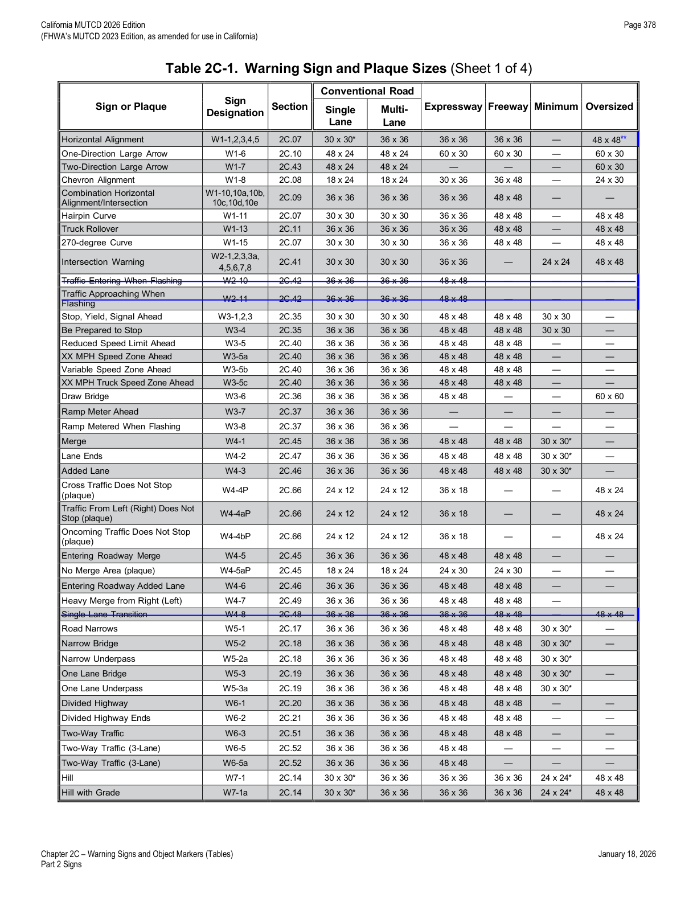
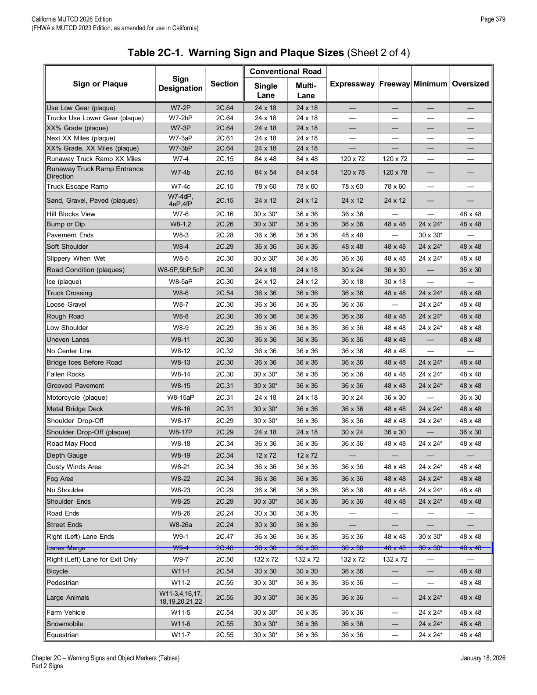
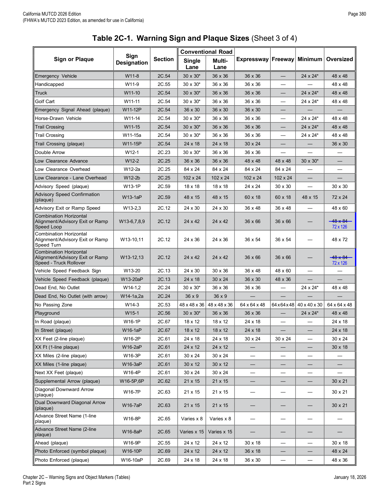
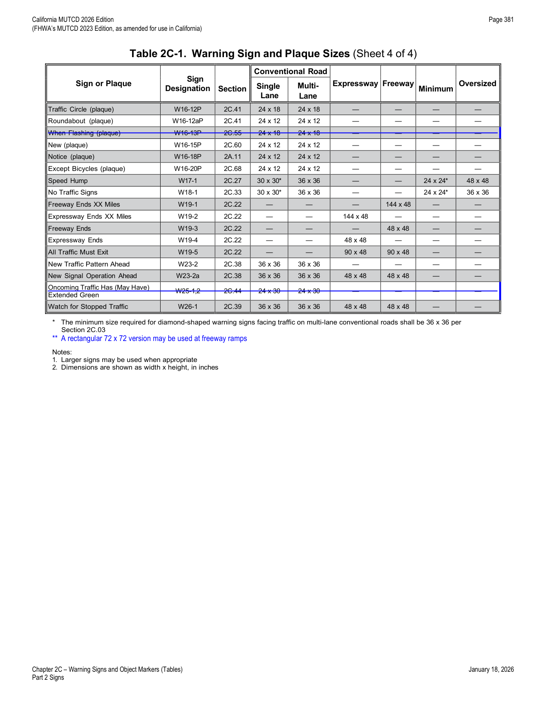
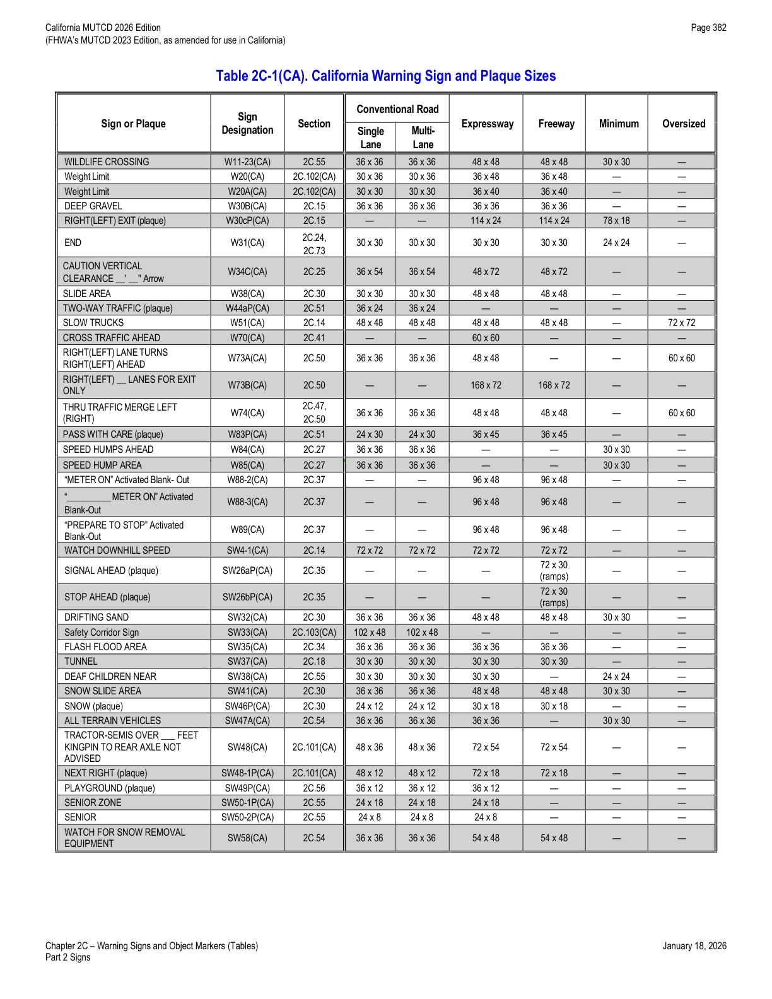
2C.04 Placement of Warning Signs
- 01Placement guidance is in Sections 2A.13 through 2A.18.
- 02The time needed for detection, recognition, decision, and reaction is the Perception-Response Time (PRT). Table 2C-3 aids in determining warning sign location; its distances can be adjusted for roadway features, other signing, and to improve visibility.
- 03Warning signs should be placed to provide adequate PRT; the distances in Table 2C-3 should be applied with engineering judgment.
- 04Minimum spacing between warning signs with different messages should be based on estimated PRT for driver comprehension of, and reaction to, the second sign.
- 05Placement effectiveness should be periodically evaluated under both day and night conditions.
| Speed | Condition A: speed reduction / lane changing in heavy traffic² | B: 0 mph³ | B: 10 mph⁴ | B: 20 mph⁴ | B: 30 mph⁴ | B: 40 mph⁴ | B: 50 mph⁴ | B: 60 mph⁴ | B: 70 mph⁴ | B: 80 mph⁴ |
|---|---|---|---|---|---|---|---|---|---|---|
| 20 mph | 225 ft | 115 ft | N/A⁵ | — | — | — | — | — | — | — |
| 25 mph | 325 ft | 155 ft | N/A⁵ | N/A⁵ | — | — | — | — | — | — |
| 30 mph | 460 ft | 200 ft | N/A⁵ | N/A⁵ | — | — | — | — | — | — |
| 35 mph | 565 ft | 250 ft | N/A⁵ | N/A⁵ | N/A⁵ | — | — | — | — | — |
| 40 mph | 670 ft | 305 ft | 100 ft⁶ | 100 ft⁶ | N/A⁵ | — | — | — | — | — |
| 45 mph | 775 ft | 360 ft | 125 ft | 100 ft⁶ | 100 ft⁶ | N/A⁵ | — | — | — | — |
| 50 mph | 885 ft | 425 ft | 200 ft | 175 ft | 125 ft | 100 ft⁶ | — | — | — | — |
| 55 mph | 990 ft | 495 ft | 275 ft | 225 ft | 200 ft | 125 ft | N/A⁵ | — | — | — |
| 60 mph | 1,100 ft | 570 ft | 350 ft | 325 ft | 275 ft | 200 ft | 100 ft⁶ | — | — | — |
| 65 mph | 1,200 ft | 645 ft | 450 ft | 400 ft | 350 ft | 275 ft | 200 ft | 100 ft⁶ | — | — |
| 70 mph | 1,250 ft | 730 ft | 525 ft | 500 ft | 450 ft | 375 ft | 275 ft | 150 ft | — | — |
| 75 mph | 1,350 ft | 820 ft | 625 ft | 600 ft | 550 ft | 475 ft | 375 ft | 250 ft | 100 ft⁶ | — |
| 80 mph | 1,475 ft | 910 ft | 725 ft | 700 ft | 625 ft | 550 ft | 450 ft | 350 ft | 200 ft | — |
| 85 mph | 1,600 ft | 1,010 ft | 825 ft | 800 ft | 750 ft | 675 ft | 575 ft | 450 ft | 300 ft | 150 ft |
Notes: (1) Distances are adjusted for a 180-foot sign legibility distance for Condition A; Condition B (except the potential-stop condition) is adjusted for a 250-foot legibility distance appropriate to an alignment warning symbol sign — for signs with less than 6-inch legend or more than four words, add a minimum of 100 feet. (2) Condition A covers locations where the road user must use extra time to adjust speed and change lanes in heavy traffic (e.g., Merge, Right Lane Ends); distances provide a 14.0–14.5 second PRT for vehicle maneuvers (2018 AASHTO Table 3-3, Decision Sight Distance, Avoidance Maneuver E), adjusted for 180-foot legibility. (3) Condition B, 0 mph, is the warning of a potential stop (Stop/Yield/Signal Ahead, Intersection Warning); based on 2018 AASHTO Table 3-1 Stopping Sight Distance with a 2.5-second PRT and 11.2 ft/sec² deceleration. (4) Other Condition B columns cover Turn, Curve, Reverse Turn, or Reverse Curve deceleration, using a 2.5-second PRT and a 10 ft/sec² deceleration rate, adjusted for 250-foot legibility. (5) No suggested distance is given — placement is site-dependent; an alignment warning sign may be placed anywhere from the point of curvature up to 100 feet in advance of the curve, but at least 100 feet from any other sign. (6) The minimum advance placement distance is listed as 100 feet to provide adequate sign spacing. Warning signs for conditions not tied to a specific location (e.g., Deer Crossing, SOFT SHOULDER) may be installed at an appropriate location based on engineering judgment.
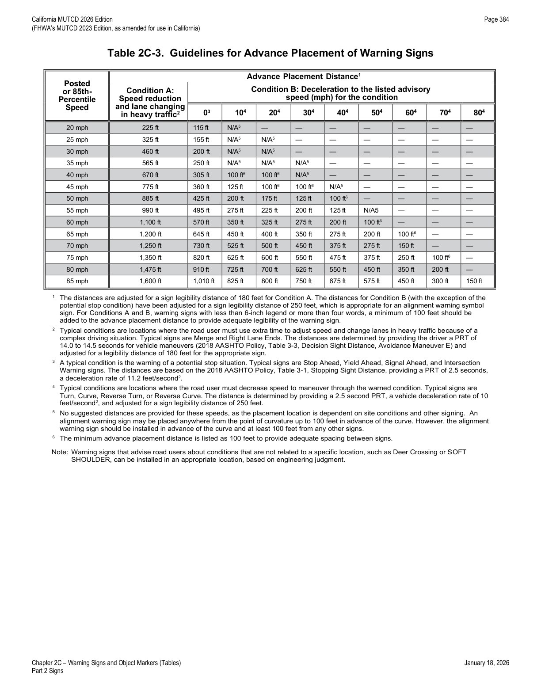
2C.05 Horizontal Alignment Warning Signs — General
- 01A variety of horizontal alignment warning signs (see Figure 2C-1), pavement markings (Chapter 3B), and delineation (Chapter 3G) advise motorists of a change in roadway alignment. Uniform application relative to the amount of alignment change conveys a consistent message, establishing driver expectancy and promoting effective roadway operations. Sections 2C.05 through 2C.12 address the design and application of horizontal alignment warning signs.
- 02Treatments used in advance of or within a change in horizontal alignment include: (A) Horizontal alignment signs — Turn (W1-1), Curve (W1-2, W1-10 series, W1-11, W1-13, W1-15), Reverse Turn (W1-3), Reverse Curve (W1-4), Winding Road (W1-5), Exit Speed (W13-2), Ramp Speed (W13-3), and Combination Horizontal Alignment/Advisory Exit or Ramp Speed (W13-6 through W13-11) (Sections 2C.07, 2C.09, 2C.12); (B) Advisory Speed (W13-1P) plaque (Section 2C.59); (C) Chevron Alignment (W1-8) signs (Section 2C.08); (D) Delineators (Chapter 3G); (E) One-Direction Large Arrow (W1-6) sign (Section 2C.10); (F) Raised retroreflective pavement markers (Sections 3B.15–3B.17); (G) Sign or marking conspicuity enhancements (Section 2A.11); (H) Wide edge lines (Section 3A.04); (I) Pavement word, symbol, and arrow markings (Sections 3B.20–3B.22); (J) Rumble strips (Chapter 3K); (K) Vehicle Speed Feedback Sign (Section 2C.13); and (L) Speed reduction markings (Section 3B.28).
- 03Considerations other than traffic control devices — improved surface friction (high-friction surface treatments), pavement edge treatments, lighting improvements, increased superelevation, and rumble strips — might also be used in advance of or within an alignment change.
- 04Except as provided in Section 2C.06, device selection for a horizontal alignment change should consider one or more of: (A) approach speed; (B) recommended advisory speed for the change; (C) the difference between speed limit and advisory speed (speed differential); (D) daily traffic volumes; (E) the typical mix of vehicle types; (F) sight distance through the change; (G) other traffic control devices already used on the same roadway segment; (H) crash history of the change; and (I) presence of driveways or intersections within the curve radius.
2C.06 Device Selection for Changes in Horizontal Alignment
- 01Chart A of Table 2C-4 shall be used to determine the need for devices for changes in horizontal alignment. If Chart A indicates a device is needed, Chart B of Table 2C-4 shall be used to specify the type(s) of devices used in advance of, and/or along, the curve, except as provided in Paragraphs 3, 5, and 6. The speed differential in Chart B shall be the difference between the curve's advisory speed and the roadway's posted speed limit, statutory speed limit, or the 85th-percentile approach speed.
- 02Chart A of Table 2C-4 is based on existing AADT, type of roadway, and whether existing markings are present.
- 03A One-Direction Large Arrow (W1-6) sign may be used in place of, or to supplement, delineators (Chapter 3G) or Chevron Alignment (W1-8) signs when: (A) site conditions limit the number of delineators or chevrons that are visible; or (B) the number that can be installed within the alignment change is less than the number determined by the spacing in Section 2C.08 or 3G.04.
- 04Additional or supplemental devices may be used for an alignment change based on engineering judgment.
- 05Devices for changes in horizontal alignment may be omitted when the approach speed limit is 20 mph or less.
- 06Devices for changes in horizontal alignment may be omitted on urban streets with an AADT of 1,000 vehicles per day or less.
- 07For device selection, an arterial or collector is considered to have pavement markings when a center line, edge lines, or both are present. Warrants for center lines and edge lines are in Sections 3B.02 and 3B.10.
| Chart A — Determination of Need (by Roadway Type and AADT) | ||||
|---|---|---|---|---|
| Roadway Type | AADT < 1,000 | 1,000–2,999 | 3,000–3,999 | > 3,999 |
| Freeways and Expressways | Required | Required | Required | Required |
| Arterial or Collector without pavement markings | Optional | Recommended | Required | Required |
| Arterial or Collector with pavement markings | Optional | Recommended | Recommended | Required |
| All other roadways | Optional | Optional | Optional | Optional |
| Speed Differential | Devices for Change in Horizontal Alignment |
|---|---|
| 5 mph | Pavement markings or advance horizontal alignment warning sign on paved roadways; advance horizontal alignment warning sign on unpaved roadways |
| 10 mph | Advance horizontal alignment warning sign |
| 15 mph | Delineators and advance horizontal alignment warning sign |
| 20 mph or more | Chevrons and advance horizontal alignment warning sign |
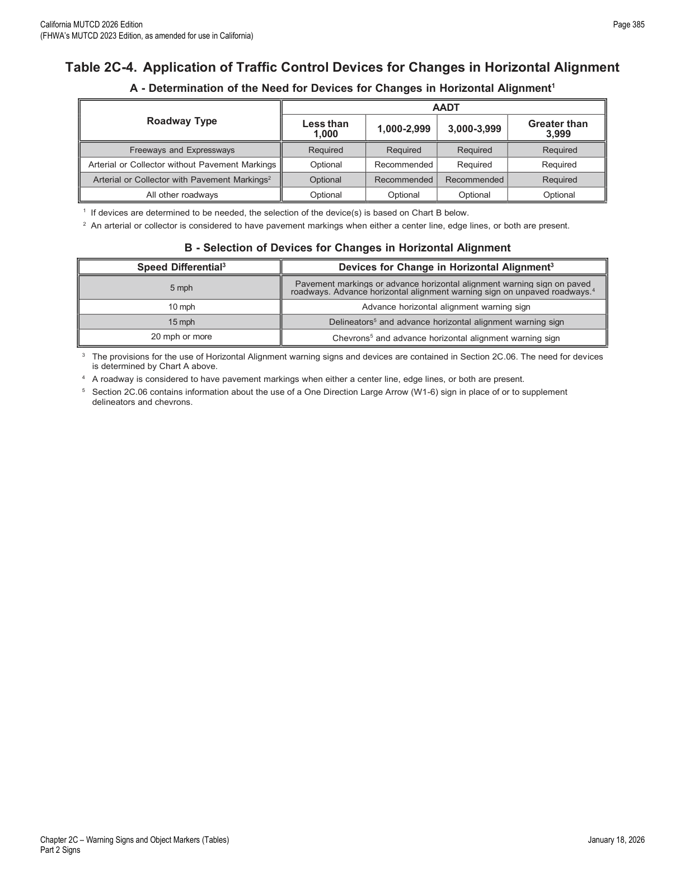
2C.07 Horizontal Alignment Signs (W1-1 through W1-5, W1-11, and W1-15)
- 02A Turn (W1-1) sign should be used instead of a Curve (W1-2) sign in advance of a horizontal curve with an advisory speed of 30 mph or less.
- 03Where two alignment changes in opposite directions are separated by a tangent of less than 600 feet, use a Reverse Turn (W1-3) sign instead of multiple Turn (W1-1) signs, or a Reverse Curve (W1-4) sign instead of multiple Curve (W1-2) signs.
- 04Figure 2C-2 provides examples of warning signs for turns and curves.
- 05A Winding Road (W1-5) sign may be used instead of multiple Turn or Curve signs where a series of turns or curves requires driving caution and where individual curve/turn signs would be too numerous to be effective.
- 05aWhere any curve in the series has an advisory speed 10 mph or more below that of the first curve, it should be posted with its own curve or turn sign and an Advisory Speed (W13-1P) plaque.
- 06A NEXT XX MILES (W7-3aP) supplemental distance plaque (Section 2C.61) may be installed below the Winding Road sign where continuous roadway curves exist for a specific distance.
- 07If the alignment change is 135 degrees or more, a Hairpin Curve (W1-11) sign may be used instead of a Turn or Curve sign.
- 08If the change of direction is approximately 270 degrees, such as on a cloverleaf interchange ramp, a 270-degree Loop (W1-15) sign may be used instead of a Turn or Curve sign.
- 09When a Hairpin Curve or 270-degree Loop sign is installed, a One-Direction Large Arrow (W1-6) sign or Chevron Alignment (W1-8) signs should also be installed on the outside of the turn or curve.
- 10Horizontal Alignment signs may be combined with the Advisory Speed (W13-1P) plaque (Section 2C.59).
- 11Refer to Section 2C.35 for the oversized square-shape version of W1-1 used at a short ramp length with a limiting curve near the ramp terminal (see Figure 2C-3).
2C.08 Chevron Alignment Sign (W1-8)
- 02Chevron Alignment signs may be used instead of or in addition to standard delineators.
- 03The Chevron Alignment sign shall be a vertical rectangle with no border.
- 04If used, Chevron Alignment signs shall be installed on the outside of a turn or curve, in line with and at approximately a right angle to approaching traffic, at a minimum height of 4 feet measured vertically from the sign bottom to the near edge of the traveled way.
- 05Approximate spacing of Chevron Alignment signs on the turn or curve, measured from the point of curvature (PC), should follow Table 2C-5.
- 06Chevron Alignment signs should be visible far enough in advance to give the road user adequate time to react to the alignment change.
- 07LEDs may be used to enhance Chevron Alignment sign conspicuity (Section 2A.12).
- 08LEDs used in a Chevron Alignment sign shall be yellow LEDs outlining the chevron symbol.
- 09Chevron Alignment signs shall not be placed on the far side of a T-intersection facing traffic on the stem approach to warn that a through movement is not physically possible — that is the function of a Two-Direction (or One-Direction) Large Arrow sign.
- 10Chevron Alignment signs shall not be used to mark obstructions within or adjacent to the roadway, including the beginning of guardrails or barriers — that is the function of an object marker (Section 2C.70).
- 11Chevron Alignment signs directing traffic to the right shall not be used in the central island of a roundabout or a neighborhood traffic circle.
| Advisory Speed | Curve Radius | Sign Spacing |
|---|---|---|
| 15 mph or less | Less than 200 feet | 40 feet |
| 20 to 30 mph | 200 to 400 feet | 80 feet |
| 35 to 45 mph | 401 to 700 feet | 120 feet |
| 50 to 60 mph | 701 to 1,250 feet | 160 feet |
| More than 60 mph | More than 1,250 feet | 200 feet |
Note: the relationship between curve radius and advisory speed in Table 2C-5 should not be used to determine the advisory speed itself.
2C.09 Combination Horizontal Alignment/Intersection Signs (W1-10 Series)
- 01The Turn (W1-1), Curve (W1-2), and Reverse Curve (W1-4) signs may be combined with the Cross Road (W2-1) sign or Side Road (W2-2 or W2-3) sign to create a combination Horizontal Alignment/Intersection (W1-10 series) sign (Figure 2C-1) depicting an intersection within or immediately adjacent to a turn or curve.
- 02Section 2C.65 covers use of an advance street name plaque to identify an intersecting road.
- 03Elements related to horizontal alignment should comply with Section 2C.07, and elements related to intersection configuration should comply with Section 2C.41; the symbol design should approximate the intersecting roadway configuration. No more than one Cross Road or two Side Road symbols should be displayed on any one combination sign.
- 04Use of the combination Horizontal Alignment/Intersection sign shall follow Section 2C.07 for the appropriate Turn or Curve sign.
- 05Advisory speed needs to be determined per Section 2C.59.
2C.10 One-Direction Large Arrow Sign (W1-6)
- 01A One-Direction Large Arrow (W1-6) sign (Figure 2C-1) may be used as a supplement or alternative to Chevron Alignment signs or delineators to delineate an alignment change (Figure 2C-2).
- 02A One-Direction Large Arrow sign may be used to supplement a Turn (W1-1) or Reverse Turn (W1-3) sign (Figure 2C-2) to emphasize abrupt curvature.
- 03The One-Direction Large Arrow sign shall be a horizontal rectangle with an arrow pointing left or right.
- 04If used, it shall be installed on the outside of a turn or curve, in line with and at approximately a right angle to approaching traffic.
- 05It shall not be used where there is no alignment change in the direction of travel, such as at the beginnings/ends of medians or at center piers.
- 06It shall not be used directing traffic to the right in the central island of a roundabout or a neighborhood traffic circle.
- 07It should be visible far enough in advance to give adequate time to react to the alignment change.
- 08The OM1-3 object marker should be used below and on the same post as the W1-6 sign (Section 2C.70).
- 09Refer to Section 2C.59 for use of the Confirmation Advisory Speed Plaque (W13-1aP).
2C.11 Truck Rollover Sign (W1-13)
- 01A Truck Rollover (W1-13) sign (Figure 2C-1) may supplement a horizontal alignment warning sign to warn drivers of high-center-of-gravity vehicles (trucks, tankers, recreational vehicles) of a curve or turn where there are: (A) past rollover incidents at the location; (B) high truck volumes; or (C) a speed differential (Section 2C.06) posing greater risk to high-center-of-gravity vehicles.
- 02Where engineering judgment determines the need for a Truck Rollover sign, it should be located downstream of the horizontal alignment warning sign in advance of the curve.
- 03If used, it shall be accompanied by an Advisory Speed (W13-1P) plaque indicating the recommended speed for higher-center-of-gravity vehicles.
- 03aAn oversized square-shape version should be used if installed on the outside of a turn or curve in line with and at approximately a right angle to approaching traffic (Figure 2C-3).
- 04The Truck Rollover sign may include conspicuity enhancements, or may be a blank-out sign activated by detection of an approaching high-center-of-gravity vehicle traveling in excess of the recommended speed for the condition.
- 05The curved arrow on the Truck Rollover sign shows the direction of roadway curvature; the truck tips in the opposite direction.
2C.12 Advisory Exit and Ramp Speed Signs (W13-2 and W13-3) and Combination Horizontal Alignment/Advisory Exit and Ramp Speed Signs (W13-6 through W13-13)
- 01Where an advisory speed is posted in advance of a freeway or expressway exit, the Advisory Exit Speed (W13-2) sign (Figure 2C-1) shall be used.
- 02Where an advisory speed is posted in advance of a conventional road ramp or to another roadway or roadside facility, the Advisory Ramp Speed (W13-3) sign (Figure 2C-1) shall be used.
- 03An Advisory Exit Speed or Advisory Ramp Speed sign shall be used when the difference between the mainline speed limit and the exit/ramp advisory speed near the departure point is 20 mph or greater.
- 03aThe Advisory Ramp Speed (W13-3) sign should be installed on the right of right freeway-to-freeway connectors, or the left of left connector ramps, just beyond the neutral area (gore), where the ramp cannot be comfortably negotiated by motorists at approach speeds.
- 04An Advisory Exit or Ramp Speed sign should be used when the mainline-to-advisory-speed difference is 15 mph.
- 05An Advisory Exit or Ramp Speed sign may be used, based on engineering judgment, when the difference is 10 mph or less.
- 05aWhere additional warning is needed for ramp curvature beyond the gore, a curve warning sign with an advisory speed should be posted.
- 06The Combination Horizontal Alignment/Advisory Exit Speed (W13-6, W13-8, W13-10) signs may be used in lieu of the W13-2 sign, and the combination Advisory Ramp Speed (W13-7, W13-9, W13-11) signs in lieu of the W13-3 sign.
- 07The Combination Truck Rollover/Advisory Exit Speed and Truck Rollover/Advisory Ramp Speed (W13-12 and W13-13) signs may be used in lieu of the W13-2/W13-3 signs if the tip-over condition is near the gore.
- 08Roadway geometrics on the Combination Horizontal Alignment/Advisory Exit and Ramp Speed signs shall be limited to the standard signs shown in this Manual.
- 09The Advisory Exit Speed or combination sign should be installed along the deceleration lane on the right of right (or left of left) exit ramps just beyond the gore, visible in time for the road user to decelerate and exit.
- 09bThe W13-2 sign is not necessary for an exit ramp with tangent alignment that terminates at a STOP sign or signal.
- 10Regulatory Speed Limit signs (Section 2B.21) should not be located near exit ramps or deceleration lanes where they would conflict with the advisory speed on the Advisory Exit or Ramp Speed signs.
- 11Section 2C.59 provides for the determination of the displayed advisory speed.
- 12Table 2C-3 lists recommended advance sign placement distances for deceleration to various advisory speeds.
- 13Where there is a need to remind road users of the recommended advisory speed, a horizontal alignment warning sign with an advisory speed plaque showing the same speed may be installed at a downstream location along the ramp.
- 14If ramp curvature changes enough to warrant a lower advisory speed, a horizontal alignment warning sign with the new advisory speed should be displayed in advance of the change (Figure 2C-3).
- 15The One-Direction Large Arrow (W1-6) sign may be installed beyond the exit gore on the outside of the curve for additional warning of an immediate curvature change; when used with the exit speed, it may be supplemented with a Confirmation Advisory Speed (W13-1aP) plaque (Figure 2C-1) when that plaque is not used with the Exit Gore (E5-1 series) sign.
- 16The horizontal alignment symbol on the Combination signs should be consistent with the ramp's actual horizontal geometry.
- 17Examples of advisory speed signing for exit ramps are shown in Figure 2C-3.
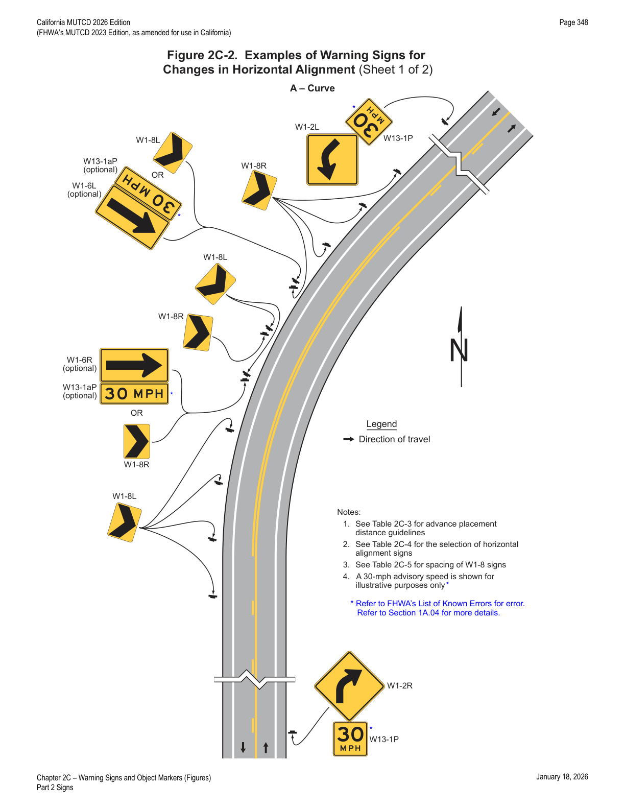
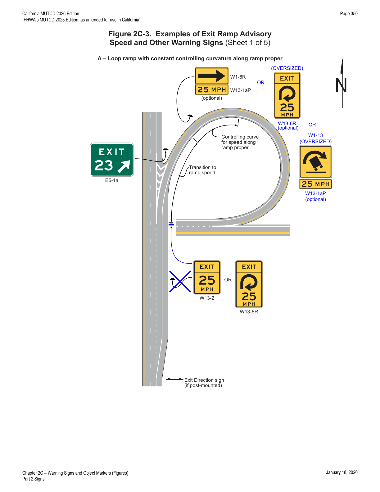
2C.13 Vehicle Speed Feedback Sign and Plaque (W13-20 and W13-20aP)
- 01A Vehicle Speed Feedback (W13-20) sign or (W13-20aP) plaque (Figure 2C-4) that displays an approaching vehicle's speed to its operator may be used to warn drivers of their speed relative to either a Speed Limit (R2-1) sign or a horizontal alignment warning sign assembly with a posted advisory speed.
- 02When displaying speed relative to the posted speed limit, the W13-20aP plaque shall be mounted below a Speed Limit (R2-1) sign (Section 2B.21).
- 03When supplementing a horizontal alignment warning sign's advisory speed, the W13-20 sign shall be an independent installation near the point of curvature (Section 2C.06).
- 04The legend YOUR SPEED shall be black on a yellow retroreflective background, except as provided in Sections 6H.01 and 7B.01. The changeable legend displaying vehicle speed shall be yellow luminous on a black opaque background, displayed as an integer. The sign/plaque shall not flash, strobe, change color, or otherwise animate the changeable legend. When no vehicle is approaching, the changeable display shall show no legend.
- 05The changeable portion's height, width, and stroke should approximately match the Speed Limit sign it supplements or is mounted below.
- 06When a W13-20aP plaque is used with a Speed Limit sign, it should be approximately the same width as that sign.
2C.14 Hill Signs (W7-1 and W7-1a)
- 01The Hill (W7-1) sign (Figure 2C-5) should be used in advance of a downgrade where the length, percent of grade, horizontal curvature, and/or other physical features require special precautions by road users.
- 02The Hill sign with a supplemental grade (W7-3P) plaque (Figure 2C-5, Section 2C.64), or the W7-1a sign used alone, should be installed in advance of downgrades meeting: (A) 5% grade longer than 3,000 feet; (B) 6% grade longer than 2,000 feet; (C) 7% grade longer than 1,000 feet; (D) 8% grade longer than 750 feet; or (E) 9% grade longer than 500 feet.
- 03These signs should also be installed for steeper grades, or where crash experience and field observation indicate a need.
- 04Supplemental plaques (Sections 2C.57, 2C.64) and larger signs should be used for emphasis or special hill characteristics. On longer grades, consider the Hill sign with a distance (W7-3aP) plaque or the combination distance/grade (W7-3bP) plaque (Figure 2C-5) at periodic intervals of approximately 1 mile.
- 05A USE LOW GEAR (W7-2P) or TRUCKS USE LOWER GEAR (W7-2bP) supplemental plaque (Figure 2C-5) may indicate that downshifting as well as braking might be advisable.
- 06The SLOW TRUCKS (W51(CA)) sign (Figure 2C-5(CA)) may inform drivers that slow-moving trucks substantially interfere with traffic flow; a Next Distance (W7-3a) plaque may be used with it.
- 07The WATCH DOWNHILL SPEED (SW4-1(CA)) sign (Figure 2C-5(CA)) may be used on long downhill grades to remind motorists to maintain the posted speed.
2C.15 Truck Escape Ramp Signs (W7-4 Series)
- 01Truck escape (runaway truck) ramp advance warning signs (Figure 2C-5) should be located approximately 1 mile and approximately ½ mile in advance of the grade and escape ramp; an additional W7-4b or W7-4c sign should be placed at the gore.
- 02A RUNAWAY VEHICLES ONLY (R4-10) sign (Section 2B.41) should be installed near the ramp entrance to discourage other road users from entering; No Parking (R8-3) signs should be placed near the entrance, and NO STOPPING ANYTIME (R26A(S)(CA)) signs should keep motorists from stopping in the path of runaway trucks.
- 03When truck escape ramps are installed, at least one of the W7-4 series signs shall be used.
- 04A SAND (W7-4dP), GRAVEL (W7-4eP), or PAVED (W7-4fP) supplemental plaque (Figure 2C-5) may describe the ramp surface; Caltrans (per CVC § 21400, Section 2A.04) may develop appropriate word-message signs for the specific situation.
- 05The DEEP GRAVEL (W30B(CA)) sign (Figure 2C-5(CA)) shall be placed on all truck escape ramps.
- 06The W30B(CA) sign should be placed near the outside edge of the paved ramp, prior to the beginning of the gravel bed.
- 07The RIGHT (LEFT) EXIT (W30cP(CA)) plaque (Figure 2C-5(CA)) should indicate a right or left exit to a truck escape ramp.
- 08Erect the W30cP(CA) plaque below and on the same post as the first W7-4 sign.
- 09Refer to Figure 3G-103(CA) for Runaway Truck Ramp sign and marking details.
2C.16 HILL BLOCKS VIEW Sign (W7-6)
- 01A HILL BLOCKS VIEW (W7-6) sign (Figure 2C-5) may be used on the approach to a crest vertical curve where the curvature provides inadequate stopping sight distance at the posted speed limit.
- 02When a vertical curve creates a sight-distance obstruction to a specific condition beyond the crest, the warning sign for that specific condition should be used rather than the HILL BLOCKS VIEW sign.
- 03When a HILL BLOCKS VIEW sign is used, it should be supplemented by an Advisory Speed (W13-1P) plaque indicating the recommended speed for traveling over the hillcrest based on available stopping sight distance.

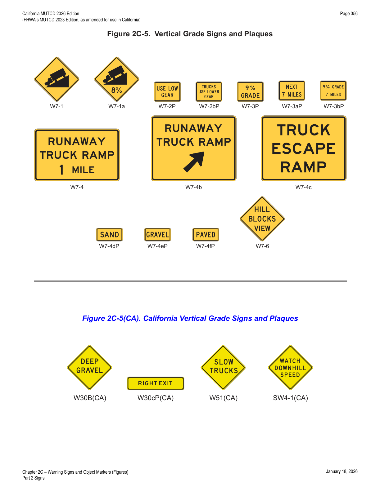
2C.17 ROAD NARROWS Sign (W5-1)
- 01Except as provided in Paragraph 2, a ROAD NARROWS (W5-1) sign (Figure 2C-6) should be used in advance of a transition on two-lane roads where pavement width is reduced abruptly to a width where vehicles traveling in opposite directions cannot simultaneously pass through the narrow portion without reducing speed.
- 02The W5-1 sign may be omitted on low-volume local streets with speed limits of 30 mph or less.
- 03Additional emphasis may be provided by object markers and delineators (Sections 2C.70–2C.73, Chapter 3G); an Advisory Speed (W13-1P) plaque (Figure 2C-1, Section 2C.59) may indicate the recommended speed.
2C.18 NARROW BRIDGE and NARROW UNDERPASS Signs (W5-2 and W5-2a)
- 01A NARROW BRIDGE (W5-2) sign (Figure 2C-6) should be used in advance of any bridge or culvert with a two-way roadway horizontal clearance of 16 to 18 feet, or with clearance less than the approach travel lanes' width. Where these conditions exist at an underpass, a NARROW UNDERPASS (W5-2a) sign (Figure 2C-6) should be used.
- 02Additional emphasis should be provided by object markers, delineators, and/or pavement markings.
- 03A NARROW BRIDGE sign may be used where approach shoulders are narrowed or eliminated at a bridge or culvert; where these conditions exist at an underpass, a NARROW UNDERPASS sign may be used.
- 04The NARROW BRIDGE or NARROW UNDERPASS sign may be omitted on low-volume rural roads with adequate sight distance to the structure on both approaches.
- 05Refer to Figure 3G-104(CA) for narrow bridge sign and marking details.
- 06The TUNNEL (SW37(CA)) sign (Figure 2C-6(CA)) may be used to warn road users of a tunnel ahead.
2C.19 ONE LANE BRIDGE and ONE LANE UNDERPASS Signs (W5-3 and W5-3a)
- 01A ONE LANE BRIDGE (W5-3) sign (Figure 2C-6) should be used on two-way roadways in advance of a bridge or culvert: (A) with roadway horizontal clearance less than 16 feet; (B) with clearance less than 18 feet where commercial vehicles are a high proportion of traffic; or (C) with clearance of 18 feet or less where approach sight distance is less than shown in Condition A of Table 2C-3.
- 02Where these conditions exist at an underpass, a ONE LANE UNDERPASS (W5-3a) sign (Figure 2C-6) should be used.
- 03Additional emphasis should be provided by object markers, delineators, and/or pavement markings.
- 04The ONE LANE BRIDGE or ONE LANE UNDERPASS sign may be omitted on low-volume rural roads with adequate sight distance to the structure on both approaches.
- 05STOP (R1-1) or YIELD (R1-2) signs (Sections 2B.04, 2B.05) and related pavement markings (Sections 3B.21, 3B.22) may be used when Conditions A, B, or C of Paragraph 1 apply.
2C.20 Divided Highway Sign (W6-1)
- 01A Divided Highway (W6-1) sign (Figure 2C-6) should be used on approaches to a section of highway (not an intersection or junction) where opposing traffic flows are separated by a median or other physical barrier.
- 02The Divided Highway (W6-1) sign shall not be used instead of a Keep Right (R4-7 series) sign at the approach end of a median island.
2C.21 Divided Highway Ends Sign (W6-2)
- 01A Divided Highway Ends (W6-2) sign (Figure 2C-6) should be used in advance of the end of a physically divided highway section (not an intersection or junction) as a warning of two-way traffic ahead.
- 02The Two-Way Traffic (W6-3) sign (Section 2C.51) should be used to warn of the transition to a two-lane, two-way section.
2C.22 Freeway or Expressway Ends Signs (W19 Series)
- 01A FREEWAY ENDS XX MILES (W19-1) sign or FREEWAY ENDS (W19-3) sign (Figure 2C-6) may be used in advance of the end of a freeway.
- 01aAt problem locations, a W19-1 or W19-3 sign may include dual installations; yellow flashing beacons may be considered.
- 01bRefer to Section 2B.109(CA) for the END FREEWAY (R58(CA)) sign.
- 02An EXPRESSWAY ENDS XX MILES (W19-2) sign or EXPRESSWAY ENDS (W19-4) sign (Figure 2C-6) may be used in advance of the end of an expressway.
- 03The rectangular W19-1 and W19-2 signs may be post-mounted or mounted overhead for increased emphasis.
- 04If the freeway ends because the next portion is not yet constructed and all traffic must exit, an ALL TRAFFIC MUST EXIT (W19-5) sign (Figure 2C-6) should be used in addition to the Freeway Ends signs in advance of the downstream end.
- 05A distance plaque may be used with a W19-3 or W19-4 sign.
2C.23 Double Arrow Sign (W12-1)
- 01The Double Arrow (W12-1) sign (Figure 2C-6) may advise road users that traffic is permitted to pass on either side of an island, obstruction, or gore. Traffic separated by this sign may either rejoin or change directions.
- 02If used on an island, the sign should be mounted near the approach end.
- 03If used in front of a pier or obstruction, the sign should be mounted on the face of, or just in front of, the pier or obstruction; where stripe markings are used on the pier, they should be discontinued to leave a 3-inch space around the outside of the sign.
2C.24 DEAD END, NO OUTLET, and ROAD ENDS Signs (W14-1, W14-1a, W14-2, W14-2a, W8-26, and W8-26a)
- 01The DEAD END (W14-1) sign (Figure 2C-6) may be used at the entrance to a single road or street that terminates without intersecting another street. The NO OUTLET (W14-2) sign (Figure 2C-6) may be used at the entrance to a road or road network with no other exit.
- 02DEAD END (W14-1a) or NO OUTLET (W14-2a) signs (Figure 2C-6) may be used in combination with Street Name (D3-1) signs (Section 2D.45) to warn turning traffic that the cross street ends in the direction indicated by the arrow.
- 03Where the cross street has no name, a W14-1a or W14-2a sign may be used alone in place of a street name sign.
- 04When the W14-1 or W14-2 sign is used, it should be posted as near as practicable to the entry point, or at a sufficient advance distance to let the road user avoid the dead-end or no-outlet condition by turning at the nearest intersecting street.
- 05The DEAD END (W14-1a) or NO OUTLET (W14-2a) sign shall not be used instead of the W14-1 or W14-2 sign where traffic can proceed straight through the intersection into the dead-end street or no-outlet area.
- 06The ROAD ENDS XX FT (W8-26) or STREET ENDS XX FT (W8-26a) sign (Figure 2C-6) may be used on the approach to the end of a conventional road or street where the terminus is not apparent.
- 06aThe W8-26 or W8-26a sign may be used in advance of the END (W31(CA)) sign in combination with an end-of-roadway marker (Section 2C.73).
- 07Section 2C.73 covers use of Type 4 object markers to mark the end of the road or street.
- 08The W8-26 and W8-26a signs shall not be used in place of a W14-1 or W14-2 sign at the entrance to such a road or street.
- 09Section 2C.22 covers signs for use on the approach to the end of a freeway or expressway.
- 10The END (W31(CA)) sign (Figure 2C-6(CA)) may be used where a street or highway ends.
- 11Install the W31(CA) sign in a head-on position (left side) in combination with an end-of-roadway marker (Section 2C.73).
2C.25 Low Clearance Signs (W12-2, W12-2a, and W12-2b)
- 01The Low Clearance Advance (W12-2) sign (Figure 2C-6) shall be used to warn road users of vertical clearances less than 15 feet 6 inches, or clearances less than 12 inches above the statutory maximum vehicle height, whichever is greater.
- 01aThe W12-2 sign shall be used to warn motorists of low structure clearances.
- 01bFor clearance of 15 feet 6 inches or less, in addition to the W12-2a sign, two W12-2 signs shall be installed on the right side of the roadway; the first shall be placed in advance of the nearest intersecting street or highway, or a wide point in the road, at which a motorist can detour or safely turn around.
- 01cThe second W12-2 sign shall be placed in advance of the structure.
- 02The actual clearance shall be displayed on the W12-2, W12-2a, and W12-2b signs to the nearest 1 inch, not exceeding the actual clearance; in frost-prone areas, a reduction not exceeding 3 inches should be used for this condition.
- 03Clearances should be evaluated periodically to determine if additional low-clearance signing is needed, particularly after resurfacing, on routes where over-height permit vehicles are normally directed, and for structures susceptible to catastrophic failure when struck.
- 04The W12-2 sign with a supplemental distance plaque should also be placed at the nearest intersecting road or wide point where a vehicle can detour or turn around.
- 05Where there is a need to warn of low clearance on an intersecting road or off a freeway/expressway exit, a rectangular sign with an appropriate word legend should be used rather than a W12-2 sign.
- 05aThe CAUTION, VERTICAL CLEARANCE ___' ___" Arrow (W34C(CA)) sign (Figure 2C-6(CA)) shall be used on all blind approaches to structures with clearances of 15 feet 6 inches or less.
- 05cThe W34C(CA) sign should be placed at a location where the motorist can detour or safely turn around before making the turn.
- 06The Low Clearance Overhead (W12-2a or W12-2b) sign (Figure 2C-6) may be installed on the structure to supplement the advance warning sign.
- 06aThe Low Clearance Overhead (W12-2a or W12-2b) sign shall be used to warn motorists of structural clearance 15 feet 6 inches or less.
- 06bThe W12-2a sign should be centered over the traveled way on the approach side of all underpasses, overheads, viaducts, overcrossings, undercrossings, and grade separations for State highways.
- 06cThe W12-2a sign shall not encroach over the shoulder area.
- 07Where physical conditions on a structure limit the width such that W12-2a or W12-2b signs cannot fit, a W12-2 sign may be installed overhead on the structure or post-mounted in front of it, in addition to the required advance W12-2 sign.
- 08For an arch or other structure where clearance varies greatly, two or more Low Clearance Overhead signs should be installed on the structure to give clearance information over the low-clearance portions.
- 09If used, the W12-2b sign shall be placed over a lane or shoulder to indicate the portion of the structure with low clearance if the posted clearance does not apply to the entire structure.
- 10The clearance shown on the Low Clearance Advance sign shall match the clearance on the W12-2a or W12-2b sign or, if there are multiple W12-2b signs, shall match the lowest clearance.
- 11The clearance shown on the W34C(CA) sign shall match the clearance on the W12-2a or W12-2b sign or, if there are multiple W12-2b signs, shall match the lowest clearance.
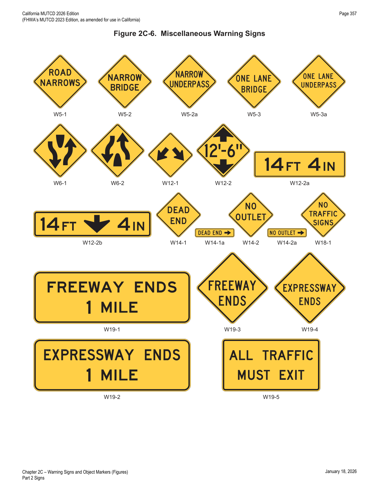
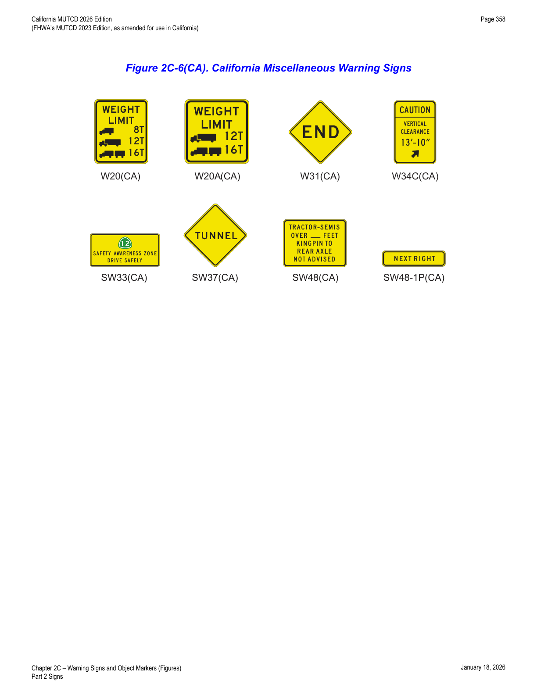
2C.26 BUMP and DIP Signs (W8-1 and W8-2)
- 01BUMP (W8-1) and DIP (W8-2) signs (Figure 2C-7) should be used in advance of a sharp rise or depression in the road profile.
- 01aWhen used at a cattle guard, the BUMP or DIP sign shall be supplemented with a diagonal downward-pointing arrow (W16-7P) plaque showing the location of the cattle guard.
- 02These signs may be supplemented with an Advisory Speed plaque (Figure 2C-1, Section 2C.59).
- 03The DIP sign should not be used in advance of a short stretch of depressed alignment that might momentarily hide a vehicle.
- 04A short stretch of depressed alignment that might momentarily hide a vehicle should be treated as a no-passing zone when center line striping is provided on a two-lane or three-lane road (Section 3B.03).
2C.27 SPEED HUMP Sign (W17-1)
- 03If a series of speed humps exists in close proximity, an Advisory Speed plaque may be eliminated on all but the first SPEED HUMP sign in the series.
- 04The legend SPEED BUMP may be used instead of SPEED HUMP on the W17-1 sign.
- 04aIf a series of speed humps exists in close proximity, a SPEED HUMPS AHEAD (W84(CA)) sign (Figure 2C-7(CA)) may replace the first SPEED HUMP sign in the series, provided additional warning is given at the humps through signs or markings.
- 04bIf speed humps exist on a network of streets within an area accessible by a limited number of access points, a SPEED HUMP AREA (W85(CA)) sign (Figure 2C-7(CA)) may be placed at each access point, provided additional warning is given at the humps.
- 05Speed humps generally provide more gradual vertical deflection than speed bumps, which limit traffic speed more severely; other forms include speed tables and raised crosswalks or intersections. For signing purposes these terms are treated as interchangeable.
- 06Sections 3B.29 and 3B.30 cover markings at and in advance of speed humps.
2C.28 PAVEMENT ENDS Sign (W8-3)
- 01A PAVEMENT ENDS (W8-3) sign (Figure 2C-7) should be used where a paved surface changes to a gravel-treated or earth road surface.
- 02An Advisory Speed plaque (Figure 2C-1, Section 2C.59) may be used when the roadway condition change requires reduced speed.
2C.29 Shoulder Signs (W8-4, W8-9, W8-17, W8-23, and W8-25)
- 02aThe black-on-yellow LOW SHOULDER (W8-9) sign shall not be used on State highways.
- 02bThe low-shoulder condition (elevation difference up to 3 inches) is not treated as a permanent condition on State highways.
- 02cRefer to Section 6H.26 for use of W8-9 in State highway construction zones.
- 03The Shoulder Drop-Off (W8-17) sign (Figure 2C-7) should be used where an unprotected shoulder drop-off adjacent to the travel lane exceeds 3 inches in depth for a significant continuous length, based on engineering judgment.
- 07Additional shoulder signs should be placed at appropriate intervals where the condition continually exists.
2C.30 Surface Condition Signs (W8-5, W8-7, W8-8, W8-11, W8-13, and W8-14)
- 01The Slippery When Wet (W8-5) sign (Figure 2C-7) may warn of unexpected slippery conditions; supplemental plaques (Figure 2C-7) with legends such as ICE, WHEN WET, STEEL DECK, or EXCESS OIL may indicate the reason.
- 01aThe W8-5 sign may be used with the SNOW (SW46P(CA)) plaque to warn of conditions where snow may be on the roadway but chains are not yet required; the combination may be placed in advance of, and intermittently within, long sections where such conditions may exist.
- 01bThe sign combination may be displayed when weather conditions make it reasonable to assume snow on the roadway is possible.
- 01dWhen used at a cattle guard, the Slippery When Wet (W8-5) sign shall be supplemented with a diagonal downward-pointing arrow (W16-7P) plaque showing the location of the cattle guard.
- 02The LOOSE GRAVEL (W8-7) sign (Figure 2C-7) may warn of loose gravel on the roadway surface.
- 03The ROUGH ROAD (W8-8) sign (Figure 2C-7) may warn of a rough roadway surface; it may be supplemented with an Advisory Speed (W13-1P) plaque. Where the rough road extends 1 mile or more, it may be supplemented with a Next Distance (W7-3a) plaque.
- 04An UNEVEN LANES (W8-11) sign (Figure 2C-7) may warn of a difference in elevation between travel lanes.
- 05The BRIDGE ICES BEFORE ROAD (W8-13) sign (Figure 2C-7) may advise bridge users of winter weather conditions in advance of bridges; it may be removed or covered outside the relevant season.
- 06The FALLEN ROCKS (W8-14) sign (Figure 2C-7) may be used in advance of an area adjacent to a hillside, mountain, or cliff where rocks frequently fall onto the roadway.
- 07Surface Condition signs should be placed in advance of the beginning of the affected section (Table 2C-3), with additional signs at appropriate intervals where the condition exists.
- 08The SLIDE AREA (W38(CA)) sign (Figure 2C-7(CA)) may be used in advance of locations where highway slides could be expected.
- 09The SNOW SLIDE AREA (SW41(CA)) sign (Figure 2C-7(CA)) may be used in areas of known snow slide or avalanche activity.
- 10The Next Distance (W7-3a) plaque may be used below the W38(CA), W50-1(CA), and SW41(CA) signs.
- 11The DRIFTING SAND (SW32(CA)) sign (Figure 2C-7(CA)) may warn traffic of drifting sand on the roadway.
2C.31 Warning Signs and Plaque for Motorcyclists (W8-15, W8-15aP, and W8-16)
- 01These signs and plaques give motorcyclists advance notice of surface conditions that might adversely affect their ability to maintain control under wet or dry conditions. Advance surface-condition signs described in Section 2C.30 — Slippery When Wet, LOOSE GRAVEL, ROUGH ROAD — can also help motorcyclists where those conditions exist.
- 02If a street or highway has a grooved or textured (rather than smooth) pavement surface — such as a grooved skid-resistance treatment on a curve, or brick pavement — a GROOVED PAVEMENT (W8-15) sign (Figure 2C-7) may provide advance warning to motorcyclists, bicyclists, and other road users. Alternate legends TEXTURED PAVEMENT or BRICK PAVEMENT may also be used.
- 03If a bridge or portion of a bridge has a metal or grated surface, a METAL BRIDGE DECK (W8-16) sign (Figure 2C-7) may provide advance warning.
- 04A Motorcycle (W8-15aP) plaque (Figure 2C-7) may be mounted below or above a W8-15 or W8-16 sign if the warning is intended primarily for motorcyclists.
2C.32 NO CENTER LINE Sign (W8-12)
- 01The NO CENTER LINE (W8-12) sign (Figure 2C-7) may warn of a roadway without center line pavement markings.
2C.33 NO TRAFFIC SIGNS Sign (W18-1)
- 01The NO TRAFFIC SIGNS (W18-1) sign (Figure 2C-6) may be used only on low-volume rural roads to advise that no signs are installed along the road; it may be installed where road users would enter the low-volume road, or where engineering judgment shows the information is needed.
- 02A W7-3aP (Figure 2C-5), W16-2P (Figure 2C-16), or W16-9P (Figure 2C-16) supplemental plaque with legend NEXT XX MILES, XX FEET, or AHEAD may be installed below the W18-1 sign when appropriate.
2C.34 Weather Condition Signs (W8-18, W8-19, W8-21, and W8-22)
- 02If used, the Depth Gauge sign should be in addition to the ROAD MAY FLOOD sign and mounted at the appropriate height to indicate water depth at the deepest point on the roadway.
- 02cThe FLASH FLOOD AREA (SW35(CA)) sign (Figure 2C-7(CA)) may be used in advance of depressions in the highway alignment subject to flash flooding.
- 03The GUSTY WINDS AREA (W8-21) sign (Figure 2C-7) may warn that wind gusts frequently strong enough to impact truck, RV, and other high-center-of-gravity vehicle stability occur along a highway section. A NEXT XX MILES (W7-3aP) plaque (Figure 2C-5) may be mounted below it to show the length of roadway affected.
- 04The FOG AREA (W8-22) sign (Figure 2C-7) may warn that foggy conditions frequently reduce visibility along a highway section. A NEXT XX MILES (W7-3aP) plaque (Figure 2C-5) may be mounted below it to show the length of roadway affected.
- 05Chapter 2L covers blank-out or changeable message signs that can be activated by detection of the applicable condition.
- 06Refer to Chapter 6O for additional flooding signs.
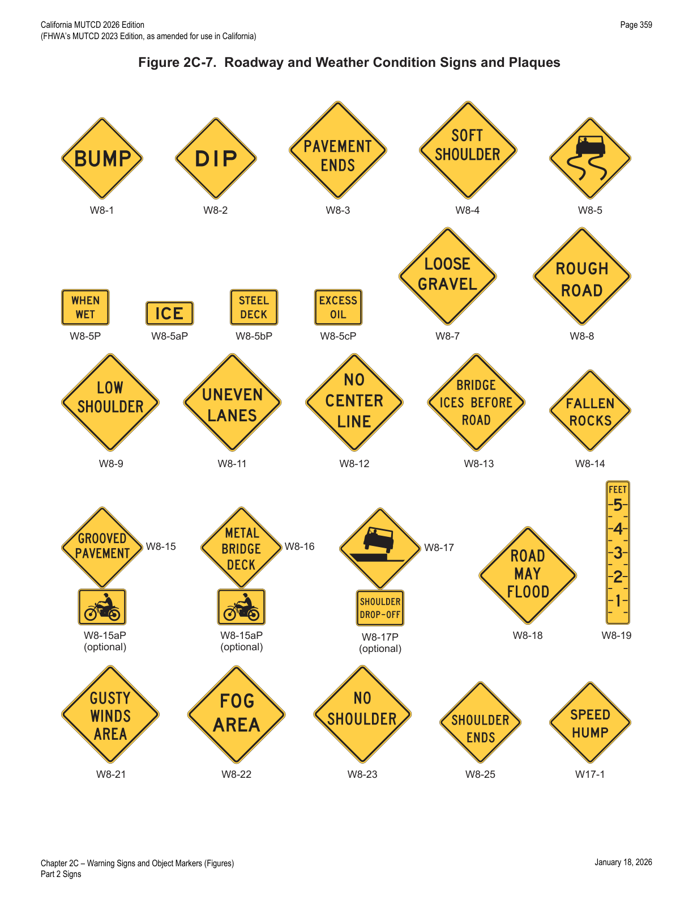
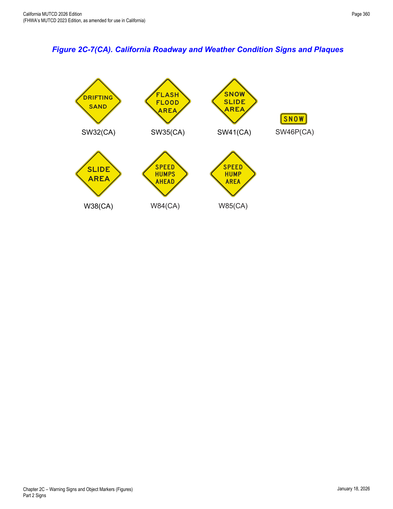
2C.35 Advance Traffic Control Signs (W3-1, W3-2, W3-3, and W3-4)
- 01The Stop Ahead (W3-1), Yield Ahead (W3-2), and Signal Ahead (W3-3) Advance Traffic Control signs (Figure 2C-8) shall be installed on an approach to a primary traffic control device that is not visible for a sufficient distance to permit the road user to respond (Table 2C-3). Visibility criteria for a traffic control signal shall be based on a continuous view of at least two signal faces for the distance specified in Table 4D-2.
- 02Where intermittent obstructions occur, engineering judgment should determine the treatment.
- 03Figure 2A-4 shows typical placement examples of an Advance Traffic Control sign.
- 04Permanent obstructions causing limited visibility might include roadway alignment or structures; intermittent obstructions might include foliage or parked vehicles.
- 05An Advance Traffic Control sign may be used for additional emphasis of the primary device even when visibility distance is satisfactory.
- 06Section 2C.65 covers use of an advance street name plaque to identify an intersecting road.
- 07A BE PREPARED TO STOP (W3-4) sign (Figure 2C-8) may warn of stopped traffic caused by a signal or STOP sign.
- 08A Warning Beacon (Section 4S.03) or yellow LEDs within the sign border may be used with an Advance Traffic Control or BE PREPARED TO STOP sign.
- 08aYellow flashing beacons may be used with Signal Ahead (W3-3) signs in advance of: (A) an isolated traffic signal on a conventional highway or expressway in a rural area; (B) the first traffic signal approaching an urban area; or (C) any signal with limited approach visibility, or where approach speeds exceed 50 mph.
- 08bOn divided highways with a median 8 feet wide or greater, the installation may consist of: (A) two Type 1 standards, each with a W3-3 sign and a 12-inch signal face, one in the median and one off the right shoulder; or (B) a Type 9 cantilever flashing beacon installation with a W3-3 sign and two 12-inch signal faces per Caltrans' Standard Plans (Section 1A.05).
- 09When a BE PREPARED TO STOP sign is used in advance of a traffic control signal, it shall be used in addition to a Signal Ahead sign and placed downstream from it.
- 10When a Warning Beacon is interconnected with a traffic signal or queue detection system, the BE PREPARED TO STOP sign should be supplemented with a WHEN FLASHING (W16-13P) plaque (Figure 2C-16).
- 10aThe WHEN FLASHING (W16-13P) plaque shall not be used to supplement the BE PREPARED TO STOP (W3-4) sign.
- 10bStudies indicate the W16-13P plaque is generally not effective as a warning device for motorists approaching signalized intersections; not using it also addresses the situation where a warning beacon is inoperative for any reason.
- 11Section 2C.45 covers use of a NO MERGE AREA (W4-5aP) supplemental plaque with a Yield Ahead sign.
- 12An oversized square-shape version of W1-1 should be used if installed on the outside curve, in line with and at approximately a right angle to exiting traffic, at a short ramp length with a limiting curve near the ramp terminal (Figure 2C-3), where W3-1 and W3-3 signs have proven ineffective.
- 13A SIGNAL AHEAD (SW26aP(CA)) plaque or STOP AHEAD (SW26bP(CA)) plaque (Figure 2C-8(CA)) shall be used below an oversized square-shape version of W1-1 at short ramp lengths with limiting curves near ramp terminals to indicate a signal or stop-sign configuration is present at the terminal.
- 14The W3-1 or W3-3 signs should be left in place when the oversized W1-1 sign with its accompanying plaque is placed.
2C.36 DRAW BRIDGE Sign (W3-6)
- 01A DRAW BRIDGE (W3-6) sign (Figure 2C-8) shall be used in advance of movable bridge signals and gates (Section 4Q.02) to warn road users.
- 02Where physical conditions prevent a motorist driving at the legal speed limit from having a continuous view of at least one signal indication before reaching the stop line, an auxiliary device should be provided in advance of movable bridge signals and gates.
- 03This device may be either a supplemental signal, or the mandatory DRAW BRIDGE (W3-6) sign with a flashing yellow beacon interconnected with movable bridge control.
2C.37 Advance Ramp Control Signal Signs (W3-7 and W3-8)
- 00For State highways, refer to Caltrans' Ramp Metering Design Manual (Section 1A.05).
- 01A RAMP METER AHEAD (W3-7) sign (Figure 2C-8) may warn road users that a freeway entrance ramp is metered and that they will encounter a ramp control signal (Chapter 4P).
- 02When ramp control signals are operated only during certain periods of the day, a RAMP METERED WHEN FLASHING (W3-8) sign (Figure 2C-8), an overhead Activated Blank-Out "METER ON" message (W88-2(CA)/W88-3(CA)) sign, or a "PREPARE TO STOP" message (W89(CA)) sign (Figure 2C-8(CA)) should be installed in advance of the ramp control signal near the ramp entrance, or on the arterial approach to the ramp, to alert road users to the presence and operation of ramp meters.
- 03The RAMP METERED WHEN FLASHING sign shall be supplemented with a Warning Beacon (Section 4S.03) that flashes when the ramp control signal is in operation.
2C.38 NEW TRAFFIC PATTERN and NEW SIGNAL OPERATION AHEAD Signs (W23-2 and W23-2a)
- 01A NEW TRAFFIC PATTERN AHEAD (W23-2) sign (Figure 2C-8) may be used on the approach to an intersection or along a roadway section to provide advance warning of a change in traffic patterns, such as revised lane usage or roadway geometry.
- 02A NEW SIGNAL OPERATION AHEAD (W23-2a) sign (Figure 2C-8) may be used on the approach to a signalized intersection to warn of a change in signal phasing.
- 03The sign should be removed when the traffic pattern returns to normal, when the changed pattern is no longer considered new, or within 12 months.
2C.39 WATCH FOR STOPPED TRAFFIC Sign (W26-1)
- 01The WATCH FOR STOPPED TRAFFIC (W26-1) sign (Figure 2C-8) may warn road users of the possibility of vehicles stopping abruptly in the travel lane due to recurring congestion.
- 02It may also be used to alert road users in areas with limited sight distance where stopped traffic could be encountered unexpectedly.
- 03A Warning Beacon (Section 4S.03) or yellow LEDs within the sign border may be used with the W26-1 sign.
2C.40 Reduced Speed Limit Ahead and Speed Zone Signs (W3-5, W3-5a, W3-5b, and W3-5c)
- 01A Reduced Speed Limit Ahead (W3-5 or W3-5a) or Truck Speed Zone Ahead (W3-5c) sign (Figure 2C-9) should inform road users of a reduced speed zone where the speed limit is reduced by more than 10 mph, or where engineering judgment indicates advance notice is needed to comply with the posted speed limit ahead.
- 02A VARIABLE SPEED ZONE AHEAD (W3-5b) sign (Figure 2C-9) should inform road users of a zone where the speed limit varies by time of day or as conditions change.
- 03If used, Reduced Speed Limit, Variable Speed Zone, or Truck Speed Zone Ahead signs shall be followed by a Speed Limit (R2-1) sign (Figure 2B-3), with the Trucks (R2-2P/M4-4P) plaque or the R6-3(CA)/R6-4(CA) signs (Figure 2B-3(CA)) on separate installations if applicable, installed at the beginning of the zone where the speed limit applies.
- 04The speed limit displayed on the W3-5, W3-5a, and W3-5c signs shall be identical to the speed limit on the subsequent Speed Limit sign.
2C.41 Intersection Warning Signs (W2-1 through W2-8)
- 01A Cross Road (W2-1), Side Road (W2-2, W2-3, or W2-3a), T-Intersection (W2-4), or Y-Intersection (W2-5) sign (Figure 2C-10) may be used in advance of an intersection to indicate its presence and the possibility of turning or entering traffic.
- 02The Circular Intersection (W2-6) sign (Figure 2C-10) may be installed in advance of a circular intersection (Figures 2B-21 through 2B-23).
- 03If an approach to a circular intersection has a statutory or posted speed limit of 40 mph or higher, the Circular Intersection (W2-6) sign should be installed in advance of it.
- 04An educational plaque (Figure 2C-10) with a legend such as TRAFFIC CIRCLE (W16-12P) or ROUNDABOUT (W16-12aP) may be mounted below a Circular Intersection sign.
- 05Section 2C.65 covers use of an advance street name plaque to identify an intersecting road.
- 06The Intersection Warning sign should illustrate and depict the general configuration of the intersecting roadway — cross road, side road, T-intersection, or Y-intersection.
- 07Intersection Warning signs, other than the Circular Intersection (W2-6), T-Intersection (W2-4), and Grade Crossing/Intersection Advance Warning (W10-2, W10-3, W10-4, W10-11, W10-12) signs (Figure 8B-4), should not be used on approaches controlled by STOP signs, YIELD signs, or signals.
- 08If an Intersection Warning sign is used where side roads are not opposite each other, the Offset Side Roads (W2-7) sign (Figure 2C-10) should be used instead of the Cross Road sign.
- 09If an Intersection Warning sign is used where two closely spaced side roads are on the same side of the highway, the Double Side Roads (W2-8) sign (Figure 2C-10) should be used instead of the Side Road sign.
- 10No more than two side roads should be depicted on the same side of the highway, and no more than three side roads total, on a W2-7 or W2-8 sign.
- 11When at least one side road is shown, the stem of an additional side road representing a significantly lower relative volume may be depicted using a line two-thirds the width of the through road, based on engineering judgment.
- 12Figure 2A-4 shows typical placement examples of an Intersection Warning sign.
- 14The Cross Traffic Ahead (W70(CA)) sign (Figure 2C-10(CA)) should be used to warn motorists that crossing traffic can be expected at non-signalized intersections in an expressway corridor.
- 15If two freeway sections are connected by a short expressway segment, or if multiple non-signalized intersections are close together, the Next Distance (W7-3aP) plaque may be placed below the W70(CA) sign.
- 16Refer to Section 2C.24 for the DEAD END (W14-1) sign.
2C.42 Actuated Advance Intersection Signs (W2-10 and W2-11)
- 01Actuated Advance Intersection signs are typically associated with restricted sight distance and gap selection at stop-controlled intersections.
- 02The TRAFFIC ENTERING WHEN FLASHING (W2-10) sign (Figure 2C-10) may be used on the uncontrolled through-roadway approach to a side or cross road stop-controlled intersection, to warn of entering traffic from the side or cross road.
- 03The TRAFFIC APPROACHING WHEN FLASHING (W2-11) sign (Figure 2C-10) may be used on the side-road stop-controlled approach to warn of traffic approaching on the uncontrolled through road.
- 04When used, the W2-10 and W2-11 signs shall be supplemented with a Warning Beacon (Section 4S.03) that activates when a vehicle on a conflicting approach is detected.
- 05WHEN FLASHING is not used in California to address the situation when a warning beacon is inoperative for any reason.
In practice: California's Table 2C-1 sizing entry for the W2-10 / W2-11 sign pair has been struck from the amended table — engineers should size these per Section 2C.41's general Intersection Warning row and engineering judgment rather than expecting a dedicated table row.
2C.43 Two-Direction Large Arrow Sign (W1-7)
- 01The Two-Direction Large Arrow (W1-7) sign (Figure 2C-10) shall be a horizontal rectangle.
- 02If used, it shall be installed on the far side of a T-intersection, in line with and at approximately a right angle to traffic approaching from the stem of the T-intersection.
- 03It shall not be used where there is no change in the direction of travel, such as at the beginnings/ends of medians or at center piers.
- 04It should be visible far enough in advance to give adequate time to react to the intersection configuration.
- 05The OM1-3 object marker should be used below and on the same post as the W1-7 sign (Section 2C.70).
2C.44 Traffic Signal Oncoming Extended Green Signs (W25-1 and W25-2)
- 01At locations where a W25-1 or W25-2 sign is required per Section 4F.01, the sign (Figure 2C-10) shall be installed near the left-most signal face for the approach.
- 02The "yellow trap" should be eliminated rather than corrected with these signs (see Part 4).
In practice: California's amended Table 2C-1 also strikes the W25-1/2 sizing row (24 x 30 shown in the source is superseded); confirm current dimensions with the district traffic office if specifying these signs, since the "Oncoming Traffic Has/May Have Extended Green" application is being phased toward signal-timing fixes per Paragraph 02 above.
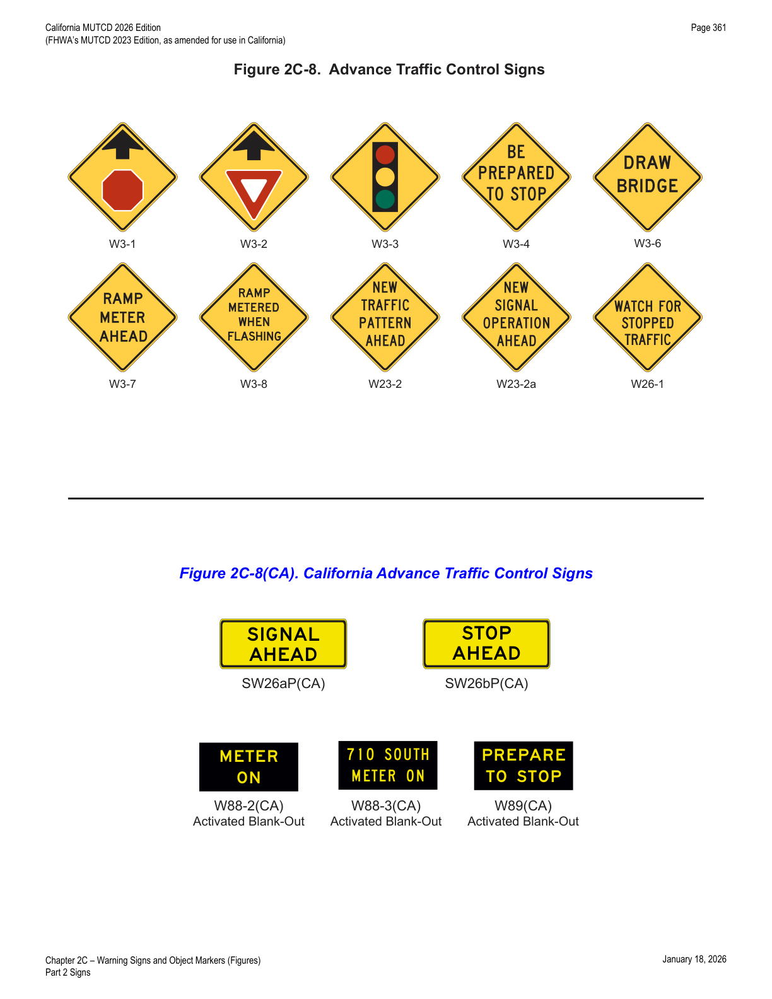

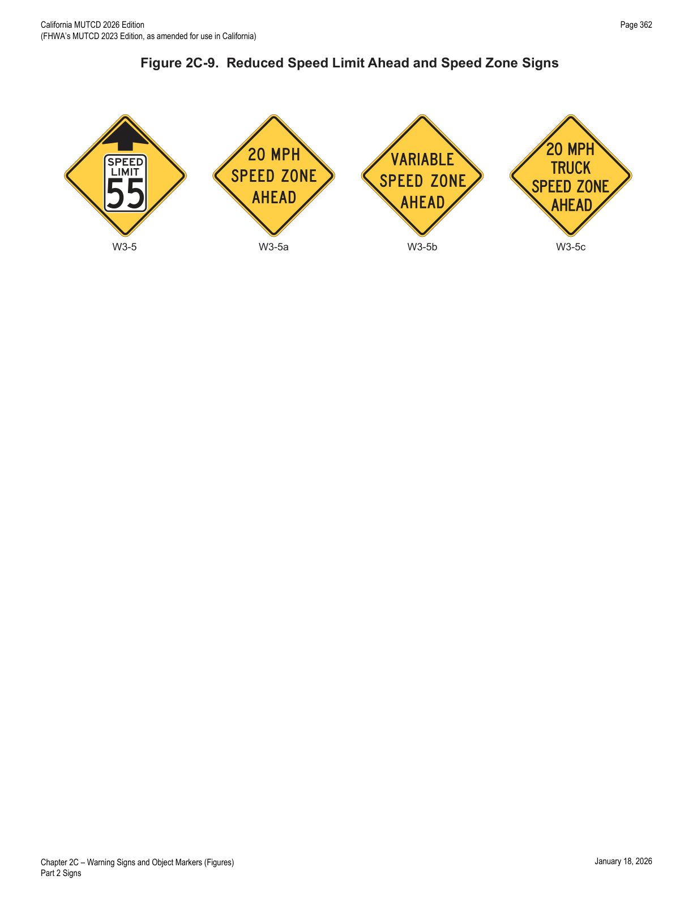
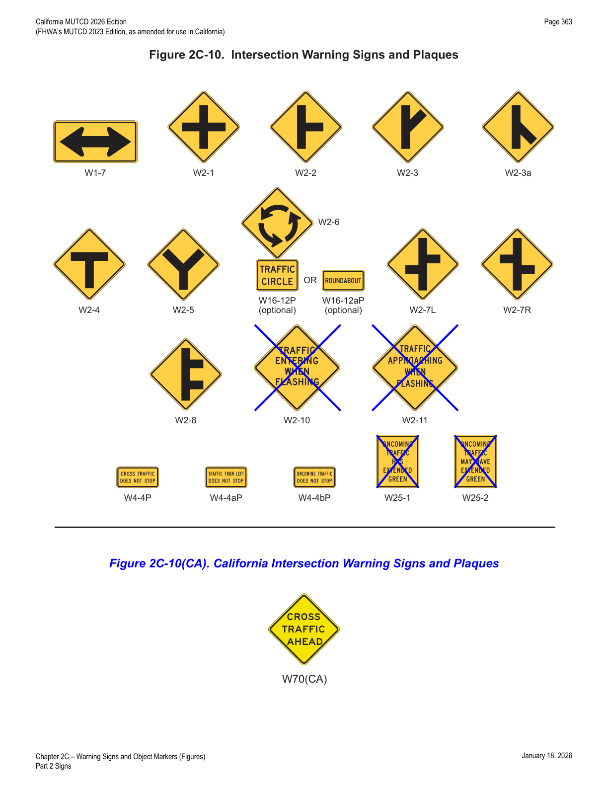

2C.45 Merge Signs and Plaque (W4-1, W4-5, and W4-5aP)
- 01A Merge (W4-1) sign (Figure 2C-11) may warn road users on the major roadway that merging movements might be encountered in advance of a point where lanes from two separate roadways converge as a single lane with no turning conflict.
- 02A Merge sign may also be installed on the entering roadway to warn its road users of the merge condition.
- 01aWhen installed at freeway entrance ramps, the W4-1 sign should be installed in advance of the paved gore area.
- 03The Merge sign should be installed on the side of the major roadway where merging traffic will be encountered, positioned so as not to obstruct the road user's view of entering traffic.
- 04When installed on a major roadway, the symbol should be oriented right or left to depict the side of the merge, with the arrow representing the major roadway and the curved stem representing the entering roadway (Figure 2C-11).
- 05When installed on an entering roadway that curves before merging, such as a ramp with curving alignment approaching the major roadway, the Entering Roadway Merge (W4-5) sign (Figure 2C-11) should be used to better portray actual geometric conditions.
- 06Where two roadways of approximately equal importance converge and merging is required, a Merge sign should be placed on each roadway.
- 07The Merge sign should not be used where two roadways converge and merging is not required.
- 08The Merge sign shall not be used in place of a Lane Ends (W4-2) sign (Section 2C.47) where lanes on a single roadway must merge because of a reduction in actual or usable pavement width.
- 09An Entering Roadway Merge (W4-5) sign with a NO MERGE AREA (W4-5aP) supplemental plaque (Figure 2C-11) mounted below it may warn road users on an entering roadway of an abrupt merge without an acceleration lane at the downstream end of the ramp.
- 10A Merge (W4-1) sign with a NO MERGE AREA (W4-5aP) plaque mounted below it may warn road users on the major roadway of the same abrupt-merge condition.
- 11For a yield-controlled channelized right-turn movement onto a roadway without an acceleration lane, a NO MERGE AREA (W4-5aP) plaque may be mounted below a Yield Ahead (W3-2) sign and/or below a YIELD (R1-2) sign where engineering judgment indicates road users would expect an acceleration lane to be present.
- 12Examples of Merge (W4-1) sign use are shown in Drawing A of Figure 2C-12.
2C.46 Added Lane Signs (W4-3 and W4-6)
- 01The Added Lane (W4-3) sign (Figure 2C-11) should be installed in advance of a point where two roadways converge and merging is not required. Where possible it should be visible from both roadways; otherwise, place one on the side of each roadway.
- 01aWhen installed at freeway entrance ramps, the sign should be installed in advance of the paved gore area.
- 02When installed on a major roadway, the symbol should be oriented right or left to depict the side from which the entering roadway converges, with the straight arrow representing the major roadway and the curved arrow representing the entering roadway; the sign should be located on the side of the major roadway from which the entering roadway converges.
- 03When installed on a roadway that curves before converging with another that has tangent alignment at the convergence point, the Entering Roadway Added Lane (W4-6) sign (Figure 2C-11) should be used to better portray actual geometric conditions.
- 04Examples of Added Lane (W4-3) and Entering Roadway Added Lane (W4-6) sign use are shown in Drawing B of Figure 2C-12.
2C.47 Lane Ends Signs (W4-2 and W9-1)
- 03The Lane Ends (W4-2) sign should be installed at the advance placement distance per Table 2C-3.
- 04A RIGHT (LEFT) LANE ENDS (W9-1) sign should be installed in advance of the Lane Ends sign to provide additional warning that a lane is ending and a merging maneuver will be required.
- 05If a W9-1 sign is installed, a Distance (W16-2P series or W16-3P series) plaque (Figure 2C-16) should be installed below it.
- 06On one-way streets or divided highways where the left-hand lane is ending and median width permits, the W9-1 and W4-2 signs should be placed facing approaching traffic on the left-hand side or median.
- 08When the W4-2 sign is located at the far side of the intersection per Paragraph 7, the W9-1 sign should be placed upstream of the intersection with the appropriate distance plaque.
- 09Section 3B.12 covers pavement markings used with a lane reduction.
- 10Lane Ends signs should not be installed in advance of the downstream end of an acceleration lane.
- 11The W4-2 and W9-1 signs shall not be used in dropped-lane situations. In dropped-lane situations on conventional roads at intersections, regulatory signs (Section 2B.28) shall be used to inform road users that a through lane becomes a mandatory turn lane.
- 12The W74(CA) sign should not be used for a lane reduction.
2C.48 Lanes Merge Signs (W9-4 and W4-8)
- 01The LANES MERGE (W9-4) and Single-Lane Transition (W4-8) signs (Figure 2C-11) warn of a merge of two lanes into one in the same direction of travel, with a merging maneuver required for each lane (Sheet 5 of Figure 2C-13) — a geometric condition where both approach lanes merge into a single lane, unlike a merge where one lane merges into the other. Section 6H.08 covers the late-merge sign.
- 02The Single-Lane Transition (W4-8) sign should be located at the advance placement distance per Table 2C-3.
- 03The Lanes Merge (W9-4) sign may be used in advance of the W4-8 sign to give additional warning that both lanes form a single lane and a merging maneuver is needed for traffic in each lane.
In practice: California's amended Table 2C-1 strikes the standalone W9-4 sizing row — use the W4-8 row (36x36 conventional / 48x48 freeway, 48x48 oversized) as the governing dimension reference for this sign pair.
2C.49 HEAVY MERGE FROM LEFT (RIGHT) Sign (W4-7)
- 01The HEAVY MERGE FROM LEFT (RIGHT) (W4-7) sign (Figure 2C-11) may supplement a W4-1 sign at multilane approaches to congested areas, informing road users that it is desirable for through traffic to move out of a lane that will be occupied by a high volume of entering traffic. If used, it may be supplemented with a W16-2P series or W16-3P series plaque (Section 2C.61).
- 02If used, the W4-7 sign shall be installed at a location upstream from the W4-1 sign.
2C.50 RIGHT (LEFT) LANE FOR EXIT ONLY Sign (W9-7)
- 00The THRU TRAFFIC MERGE LEFT (RIGHT) (W74(CA)) sign shall be used on freeways and expressways to inform motorists that the outside or inside lane is being dropped at the next exit and through traffic must merge into the adjacent lane.
- 01The RIGHT (LEFT) LANE FOR EXIT ONLY (W9-7) sign (Figure 2C-11) may provide advance warning that traffic in the right-hand (left-hand) lane must depart the roadway at the next exit.
- 01aThe W9-7 sign shall be placed between the THRU TRAFFIC MERGE LEFT (RIGHT) (W74(CA)) sign (Figure 2C-11(CA)) and the RIGHT (LEFT) LANE MUST EXIT (R3-33) sign, at locations where overhead Exit Only signs (E11-1 series) are not in place for lane drops at freeway exit ramps.
- 01bA RIGHT (LEFT) X LANES FOR EXIT ONLY (W73B(CA)) sign may be used in lieu of a W9-7 sign if more than one lane must depart the roadway at the next exit.
- 02If used, the W9-7 sign should be installed upstream from the first overhead guide sign containing an EXIT ONLY panel, or upstream from the first RIGHT (LEFT) LANE MUST EXIT (R3-33) regulatory sign if used — whichever is farther upstream from the exit.
- 03A legend or plaque displaying distance may be added to the W9-7 sign where the distance along the dropped lane between the sign and the exit ramp is greater than 1 mile.
- 04Section 2B.31 covers a regulatory sign usable for lane drops at grade-separated interchanges.
- 05On expressways, the THRU TRAFFIC MERGE LEFT (RIGHT) (W74(CA)) sign (Figure 2C-11(CA)) may be used in advance of the RIGHT (LEFT) LANE MUST TURN RIGHT (LEFT) sign (R3-7).
- 06On conventional highways, the RIGHT (LEFT) LANE TURNS RIGHT (LEFT) AHEAD (W73A(CA)) sign (Figure 2C-8(CA)) should be used in advance of the RIGHT (LEFT) LANE MUST TURN RIGHT (LEFT) sign (R3-7).
- 07A THRU TRAFFIC MERGE LEFT (RIGHT) (W74(CA)) sign may be placed in advance of the W73A(CA) sign.
- 08Refer to Figure 3B-11(CA) for lane drop markings at exit ramps.
2C.51 Two-Way Traffic Sign (W6-3)
- 01A Two-Way Traffic (W6-3) sign (Figure 2C-11) should warn road users of a transition from a multi-lane divided roadway to a two-lane, two-way section.
- 02A W6-3 sign with an AHEAD (W16-9P) plaque (Figure 2C-16) should warn of a transition from a one-way street to a two-lane, two-way section (Figure 2B-18).
- 03The Two-Way Traffic sign may be used at intervals along a two-lane, two-way roadway and may supplement the Divided Highway (Road) Ends (W6-2) sign (Section 2C.21).
- 04Section 6H.17 covers a Narrow Two-Way Traffic (W6-4) sign for temporary traffic control.
- 05The W6-3 sign should also be used where motorists could perceive they are on a one-way roadway when they are actually on a two-lane, two-way highway, such as: (A) construction sites converting a two-lane highway to a freeway or expressway; (B) two-lane, two-way highways where ultimate freeway/expressway right-of-way has been purchased and full-width grading completed; (C) two-lane, two-way highways following long multi-lane freeway/expressway sections; and (D) two-way highways with edge lines but no center lines.
- 06The TWO WAY TRAFFIC (W44aP(CA)) plaque (Figure 2C-11(CA)), if used, shall be positioned below the W6-3, W6-5, and W6-5a signs.
- 07The black-on-yellow PASS WITH CARE (W83P(CA)) plaque (Figure 2C-11(CA)), when used, shall be positioned below the Two-Way Traffic (W6-3) sign where two-way traffic is routed over a single roadway of a divided highway and passing is permitted.
- 08Refer to Figure 3B-14(CA) for signing and marking applications for lane reductions.
- 09A typical example of W6-3 sign application is shown in Figure 3B-103(CA).
2C.52 Two-Way Traffic on a Three-Lane Roadway Signs (W6-5 and W6-5a)
- 01The Two-Way Traffic on a Three-Lane Roadway (W6-5 and W6-5a) signs (Figure 2C-11) may be installed along three-lane roadways with two lanes in one direction and one lane in the opposing direction.
2C.53 NO PASSING ZONE Sign (W14-3)
- 01The NO PASSING ZONE (W14-3) sign (Figure 2C-11) shall be a pennant-shaped isosceles triangle with its longer axis horizontal, pointing to the right. When used, it shall be installed on the left-hand side of the roadway at the beginning of no-passing zones identified by pavement markings or DO NOT PASS signs, or both (Sections 2B.36, 3B.03).
- 02The NO PASSING ZONE sign may be used at the beginning of no-passing zones identified by either pavement markings or DO NOT PASS signs, or both.
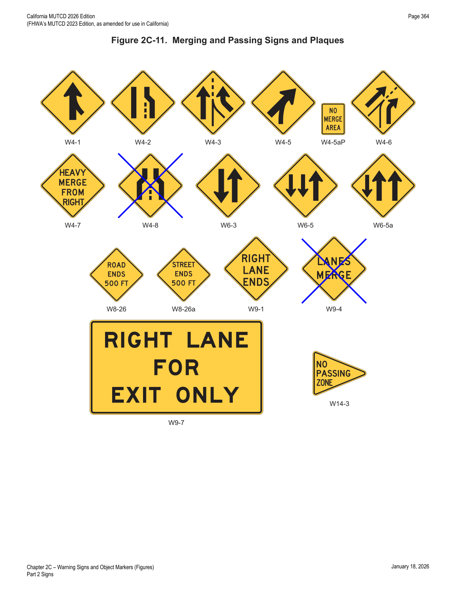
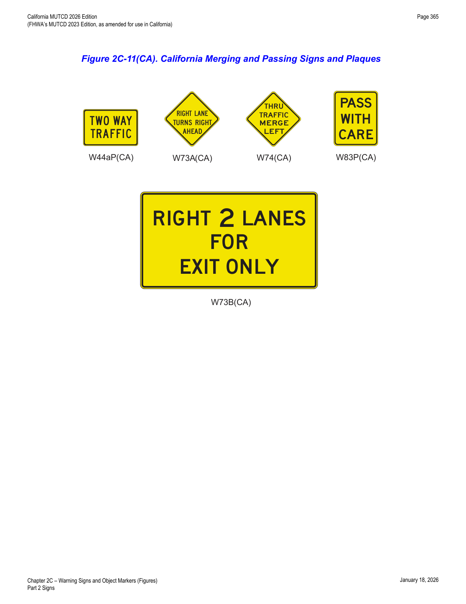
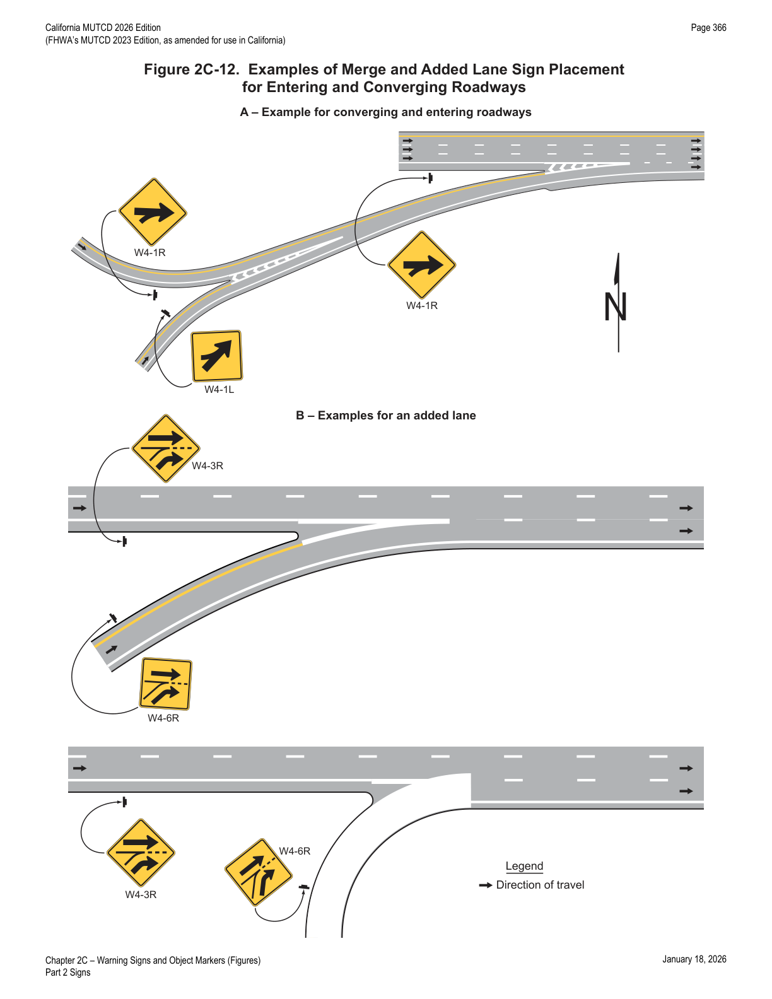
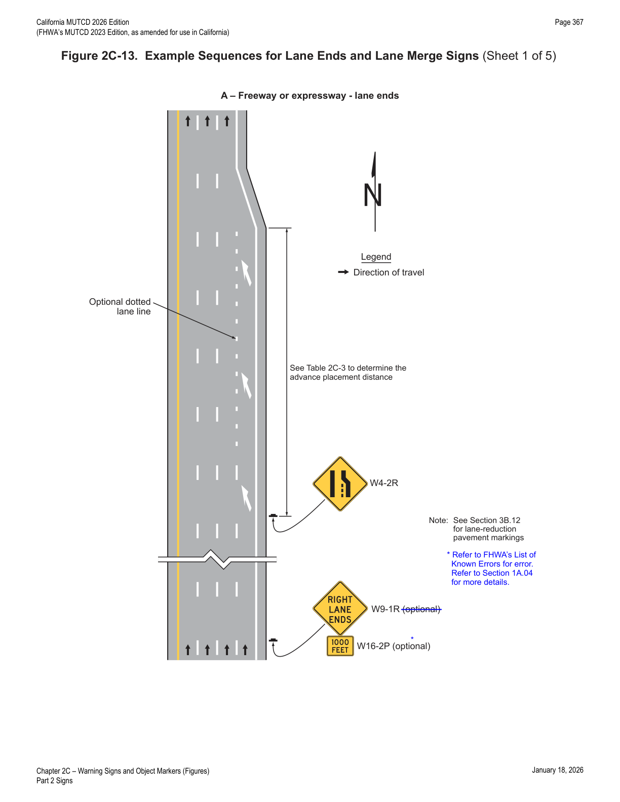
2C.54 Vehicular Traffic Warning Signs (W8-6, W11-1, W11-5, W11-8, W11-10, W11-11, W11-12P, W11-14, W11-15, and W11-15a)
- 01Vehicular Traffic Warning signs (W8-6, W11-1, W11-5, W11-8, W11-10, W11-11, W11-12P, W11-14, W11-15, and W11-15a; Figure 2C-14) may alert road users to locations where unexpected roadway entries by trucks, bicycles, farm vehicles, emergency vehicles, golf carts, horse-drawn vehicles, or other vehicles might occur. The TRUCK CROSSING (W8-6) word-message sign may be used as an alternate to the Truck (W11-10) symbol sign.
- 02These locations might be relatively confined or might occur randomly over a segment of roadway.
- 03Vehicular Traffic Warning signs should be used only where sight distance is restricted, or where the condition, activity, or entering traffic would be unexpected.
- 04If the condition or activity is seasonal or temporary, the sign should be removed or covered when it does not exist.
- 05The Trail Crossing (W11-15) sign may be used where both bicyclists and pedestrians might cross the roadway, such as at an intersection with a shared-use path; a TRAIL X-ING (W11-15P) supplemental plaque (Figure 2C-14) may be mounted below it. The TRAIL CROSSING (W11-15a) sign may warn of shared-use path crossings where pedestrians, bicyclists, and other user groups might cross.
- 06The W11-1, W11-15, and W11-15a signs and their related supplemental plaques may have a fluorescent yellow-green background with a black legend and border.
- 07Supplemental plaques (Figure 2C-16, Section 2C.57) with legends such as AHEAD, XX FEET, NEXT XX MILES, IN STREET, or IN ROAD may be mounted below Vehicular Traffic Warning signs to give advance notice of unexpected entries.
- 07aOn State highways, the IN STREET plaque should not be used.
- 07bRefer to Section 2C.67 for more on IN STREET and IN ROAD plaques.
- 08If used in advance of a trail crossing, a W11-15 or W11-15a sign should be supplemented with an AHEAD or XX FEET plaque to inform road users they are approaching a point where crossing activity might occur.
- 09If a post-mounted W11-1, W11-11, W11-15, or W11-15a sign is placed at the crossing point where golf carts, pedestrians, bicyclists, or other shared-use path users might cross, a diagonal downward-pointing arrow (W16-7P) plaque (Figure 2C-16, Section 2C.63) shall be mounted below the sign; if the sign is mounted overhead, the W16-7P plaque shall not be used.
- 10A Vehicular Traffic Warning sign assembly shall not be installed on an approach controlled by a STOP or YIELD sign, except as provided in Paragraphs 11 and 12.
- 11The assembly may be installed on an approach to a circular intersection controlled by a YIELD sign where the crosswalk is at least 20 feet in advance of the yield point at the entrance to the circulatory roadway.
- 12At a signalized or stop-controlled intersection, the assembly may be installed on an approach to a channelized right-turn lane controlled by a YIELD sign where the crosswalk is at least 20 feet in advance of the yield point.
- 13The crossing location identified by a W11-1, W11-11, W11-15, or W11-15a sign may be defined with crosswalk markings (Chapter 3C).
- 15The Emergency Vehicle (W11-8) sign, or a word-message sign indicating the type of emergency vehicle (such as rescue squad), may be used in advance of the emergency-vehicle station when no emergency-vehicle traffic control signal is present.
- 16A Warning Beacon (Section 4S.03) may be used with any Vehicular Traffic Warning sign to indicate specific periods when the condition or activity is present or likely present, or for enhanced conspicuity.
- 17A supplemental WHEN FLASHING (W16-13P) plaque (Figure 2C-16) may be used with any Vehicular Traffic Warning sign supplemented with a Warning Beacon to indicate specific periods when the condition/activity is present or likely present.
- 18The WHEN FLASHING (W16-13P) plaque shall not be used to supplement any Vehicular Traffic Warning sign.
- 19Studies indicate the W16-13P plaque is generally not effective as a warning device for motorists approaching signalized intersections; not using it also addresses the situation where a warning beacon is inoperative for any reason.
- 20Golf Cart (W11-11) signs may alert road users to locations where unexpected roadway entries by golf carts might occur, such as golf cart crossings (CVC §§ 38025, 21115.1).
- 21The W11-11 sign may also be used in combination with the IN ROAD plaque sign at locations where a local agency permits sharing the roadway with slower-moving golf carts (CVC § 21115).
- 22The ALL TERRAIN VEHICLES (SW47A(CA)) sign (Figure 2C-14(CA)) may be used in advance of a highway segment that permits both regular vehicular traffic and off-highway motor vehicle use.
- 23A Next Distance (W7-3a) plaque should supplement the SW47A(CA) sign.
- 24The WATCH FOR SNOW REMOVAL EQUIPMENT (SW58(CA)) sign (Figure 2C-14(CA)) may be used on highways leading to snow areas.
- 25The SW58(CA) sign should be covered or removed during the summer season.
- 26The SW58(CA) sign is normally placed at lower elevations where the first snow is usually encountered.
2C.55 Non-Vehicular Warning Signs (W11-2, W11-3, W11-4, W11-6, W11-7, W11-9, and W11-16 through W11-22)
- 01aRefer to CVC §§ 21364 and 21365 for the Cattle (W11-4) sign.
- 01bRefer to CVC § 21805 for the Equestrian (W11-7) sign.
- 01cThe Deer Crossing (W11-3) sign should be used only after the Department of Fish and Wildlife warden with jurisdiction confirms a substantial problem exists.
- 01dThe Bear (W11-16) sign (Figure 2C-15) may be used in advance of an area known to be inhabited by bear where there have been reported bear crossings.
- 01eThe WILDLIFE CROSSING (W11-23(CA)) sign should be used to alert road users to multiple types of wild animals present at or near the roadway; it should not be used in lieu of the individual symbol signs for animals.
- 01fThe WILDLIFE CROSSING (W11-23(CA)) sign may be used to alert road users to a wild animal that may cause a traffic safety hazard for which there is currently no symbol sign available.
- 01gSince wildlife migration patterns can change over time, placement of non-vehicular warning signs featuring wildlife should be periodically reviewed to verify they still reflect current crossing behavior.
- 01hThe DEAF CHILDREN NEAR (SW38(CA)) sign (Figure 2C-15(CA)) may be used on city streets or county roads to indicate a deaf child is near (CVC § 21351.7).
- 01iThe SENIOR ZONE (SW50-1P(CA)) or SENIOR (SW50-2P(CA)) plaque (Figure 2C-15(CA)) may be used in combination above the Speed Limit (R2-1 [25, 20, or 15]) sign on any street or road, other than a State highway, with a speed limit greater than 25 mph adjacent to a senior citizen facility (CVC §§ 22352, 22358.4).
- 01jIf used, the NEXT XX MILES supplemental plaque should be placed at approximately 5-mile intervals, or when intersecting major traffic generators.
- 02These conflicts might be relatively confined, or might occur randomly over a segment of roadway.
- 03If used in advance of a pedestrian, snowmobile, or equestrian crossing, the W11-2, W11-6, W11-7, and W11-9 signs should be supplemented with plaques (Figure 2C-16, Section 2C.61) with legend AHEAD or XX FEET to inform road users they are approaching a point where crossing activity might occur.
- 04If a post-mounted W11-2, W11-6, W11-7, or W11-9 sign is placed at the crossing point where pedestrians, snowmobilers, or equestrians might cross, a diagonal downward-pointing arrow (W16-7P) plaque (Figure 2C-16, Section 2C.63) shall be mounted below it; if mounted overhead, the W16-7P plaque shall not be used.
- 05A Non-Vehicular Warning sign assembly shall not be installed on an approach controlled by a STOP or YIELD sign, except as provided in Paragraphs 6 and 7.
- 06The assembly may be installed on an approach to a circular intersection controlled by a YIELD sign where the crosswalk is at least 20 feet in advance of the yield point at the entrance to a circulatory roadway.
- 07At a signalized or stop-controlled intersection, the assembly may be installed on an approach to a channelized right-turn lane controlled by a YIELD sign where the crosswalk is at least 20 feet in advance of the yield point.
- 08A Pedestrian Crossing (W11-2) sign may be placed overhead, or post-mounted with a diagonal downward-pointing arrow (W16-7P) plaque, at the crosswalk location where Yield Here To (Stop Here For) Pedestrians signs (Section 2B.19) have been installed in advance.
- 09If a W11-2 sign has been post-mounted at the crosswalk where a Yield Here To (Stop Here For) Pedestrians sign is used on the approach, that sign shall not be placed on the same post as the W11-2 sign.
- 10An advance Pedestrian Crossing (W11-2) sign with an AHEAD or distance supplemental plaque may be used with a Yield Here To (Stop Here For) Pedestrians sign on the approach to the same crosswalk.
- 11The crossing location identified by a W11-2, W11-6, W11-7, or W11-9 sign may be defined with crosswalk markings (Chapter 3C).
- 12The W11-2 and W11-9 signs and their related supplemental plaques may have a fluorescent yellow-green background with a black legend and border.
- 13When a fluorescent yellow-green background is used, a systematic approach featuring one background color within a zone or area should be used; mixing standard yellow and fluorescent yellow-green backgrounds within a selected site area should be avoided.
- 14A Warning Beacon (Section 4S.03) may be used with any Non-Vehicular Warning sign to indicate specific periods when the condition/activity is present or likely present, or for enhanced conspicuity.
- 15A supplemental WHEN FLASHING (W16-13P) plaque (Figure 2C-16) may be used with any Non-Vehicular Warning sign supplemented with a Warning Beacon for the same purpose.
- 16The WHEN FLASHING (W16-13P) plaque shall not be used to supplement any Non-Vehicular Warning sign.
- 17Studies indicate the W16-13P plaque is generally not effective as a warning device for motorists approaching signalized intersections; not using it also addresses the situation where a warning beacon is inoperative for any reason.
2C.56 Playground Sign (W15-1)
- 01The Playground (W15-1) sign (Figure 2C-15) may give advance warning of a designated children's playground adjacent to the road.
- 02The Playground sign may have a fluorescent yellow-green background with a black legend and border.
- 03If access to the playground requires a roadway crossing, consider crosswalk pavement markings (Chapter 3C) and Non-Vehicular Warning signs (Section 2C.55).
- 04The PLAYGROUND (SW49P(CA)) plaque (Figure 2C-15(CA)) should not be used alone.
- 05The SW49P(CA) plaque may be used in combination above the Speed Limit (R2-1 [25]) sign and WHEN CHILDREN ARE PRESENT (S4-2) sign on any street or road, other than a State highway, with a speed limit greater than 25 mph adjacent to a children's playground within a public park (CVC § 22357.1).
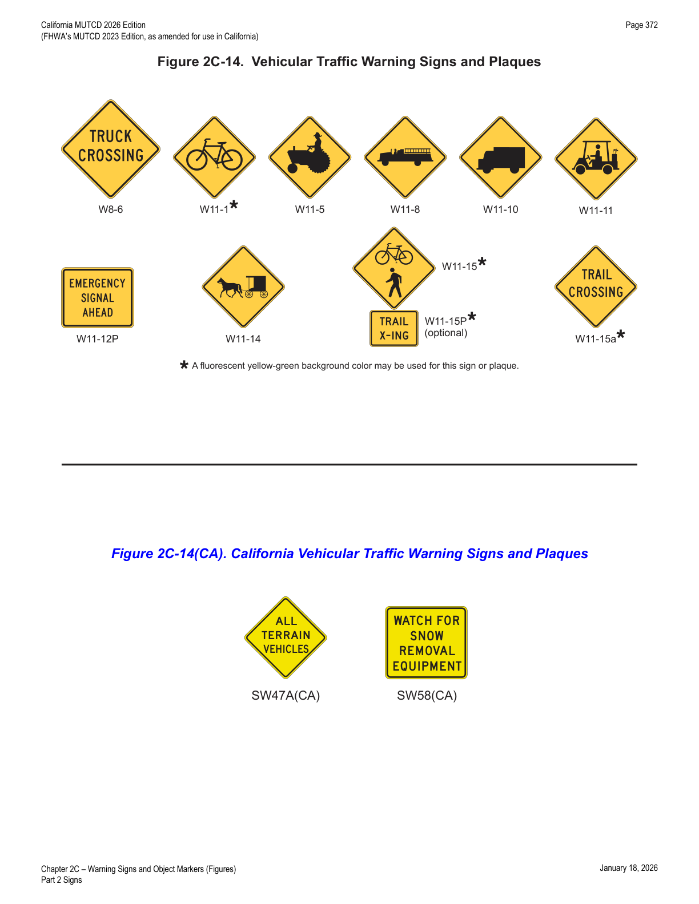


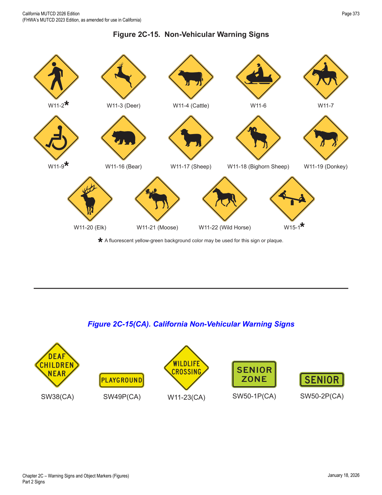
2C.57 Use of Supplemental Warning Plaques
- 01A supplemental warning plaque (Figure 2C-16) may be displayed with a warning or regulatory sign when engineering judgment indicates road users require additional warning information beyond the main sign message.
- 02Supplemental warning plaques shall be used only in combination with, and installed on the same post(s) as, warning or regulatory signs; they shall not be mounted or displayed alone.
- 03Unless otherwise provided in this Manual for a particular plaque, supplemental warning plaques shall be mounted below the sign they supplement.
2C.58 Design of Supplemental Warning Plaques
- 01A supplemental warning plaque used with a warning sign shall have the same legend, border, and background color as that warning sign; a supplemental warning plaque used with a regulatory sign shall have a black legend and border on a yellow background.
- 02Supplemental warning plaques shall be square or rectangular.
2C.59 Advisory Speed Plaque (W13-1P) and Confirmation Advisory Speed Plaque (W13-1aP)
- 01The Advisory Speed (W13-1P) plaque (Figure 2C-1) may supplement an advance warning sign to indicate the advisory speed for a condition.
- 02The Confirmation Advisory Speed (W13-1aP) plaque (Figure 2C-1) may supplement a One-Direction Large Arrow (W1-6) sign on the outside of a turn or curve, in line with and at approximately a right angle to approaching traffic.
- 03Use of the Advisory Speed and Confirmation Advisory Speed plaques for horizontal curves shall follow Section 2C.06 and Table 2C-6; the speed differential in Table 2C-6 shall be the difference between the curve's advisory speed and the posted speed limit, statutory speed limit, or 85th-percentile approach speed. The Advisory Speed plaque shall also be used where an engineering study indicates a need to advise road users of the advisory speed for other roadway conditions.
- 04The speed displayed on the Advisory Speed and Confirmation Advisory Speed plaques shall be a multiple of 5 mph.
- 05Except in emergencies or temporary conditions, an Advisory Speed or Confirmation Advisory Speed plaque shall not be installed until the advisory speed has been determined by an engineering study.
- 06The Advisory Speed plaque shall only be used to supplement an advance warning sign; neither plaque shall be installed as a separate sign installation.
- 07If used with a sign also supplemented by another plaque, such as an Advance Street Name plaque (Section 2C.65), the Advisory Speed plaque should be mounted immediately below the primary warning sign, with any other plaque mounted below the Advisory Speed plaque.
- 16If a curve warning sign is needed, it should be supplemented with an advisory speed message consistent with the approach speed.
- 17A mechanical or electronic Ball Bank Indicator should be used to determine the advisory speed for curves.
- 18This speed is shown on Advisory Exit and Ramp Speed signs and Advisory Speed plaques.
- 19The Advisory Speed (W13-1P) plaque may also be used with a number of other warning signs.
- 20One method for determining advisory speed is to drive the curve at several selected uniform speeds and plot Ball Bank Indicator readings, as shown in Figure 2C-101(CA).
- 21A minimum of three speed runs should be made in each direction.
| Speed Differential | Use of Advisory Speed Plaque |
|---|---|
| 5 mph | Optional |
| 10 mph | Recommended |
| 15 mph or more | Required |
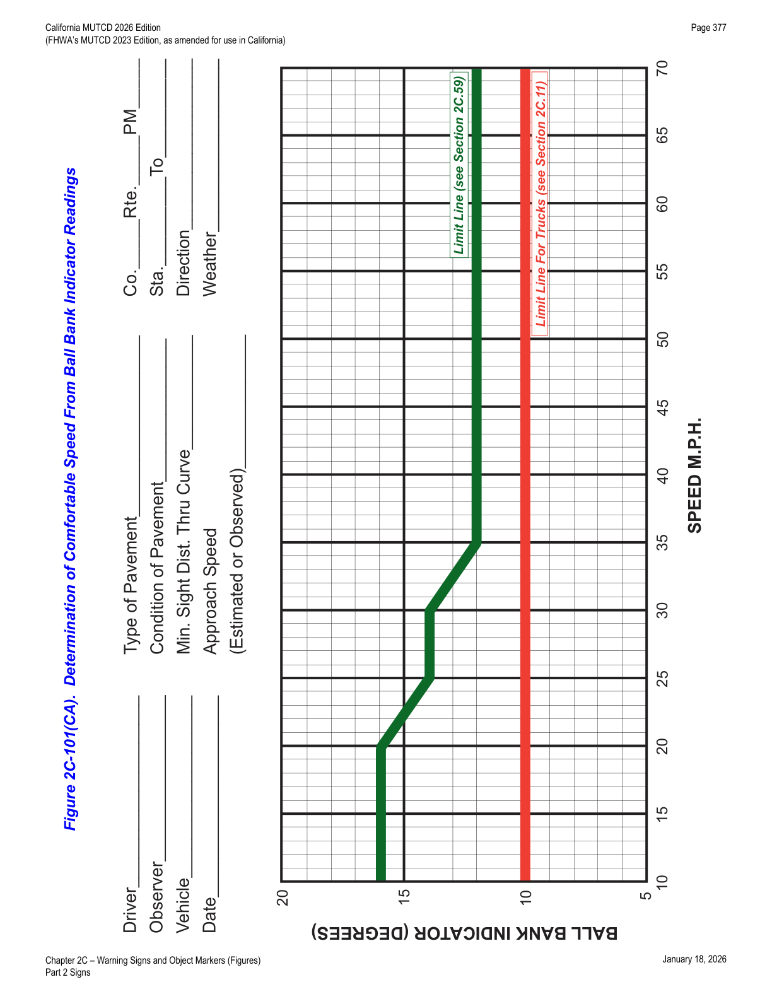
2C.60 NEW Plaque (W16-15P)
- 01A NEW (W16-15P) plaque (Figure 2C-16) may be mounted above a regulatory sign when a new regulation takes effect, to alert road users to the new traffic regulation; it may also be mounted above an advance warning sign (such as a Signal Ahead sign for a newly installed traffic control signal) for a warning of a new traffic condition.
- 02The NEW plaque should be removed no later than 12 months after installation.
2C.61 Distance Plaques (W16-2 Series, W16-3 Series, W16-4P, and W7-3aP)
- 01The Distance Ahead (W16-2 series and W16-3 series) plaques (Figure 2C-16) may inform the road user of the distance to the condition indicated by the warning sign.
- 02The Next Distance (W7-3aP and W16-4P) plaques (Figures 2C-5 and 2C-16) may inform road users of the length of roadway over which the condition indicated by the warning sign exists.
- 03When the distance is in miles, the mileage shown should be to the nearest ¼ mile for distances less than 1 mile, and to the nearest mile for distances over 1 mile. The text "MILE" should be used for a distance of 1 mile or less; "MILES" should be used for distances over 1 mile.
2C.62 Supplemental Arrow Plaques (W16-5P and W16-6P)
- 01If the condition indicated by a warning sign is located on an intersecting road and the distance between the intersection and the condition is not sufficient for adequate advance placement of the warning sign, a Supplemental Arrow (W16-5P or W16-6P) plaque (Figure 2C-16) should be used below the warning sign.
- 02Supplemental Arrow plaques shall have the same legend design as the Advance Turn Arrow and Directional Arrow auxiliary signs (Sections 2D.26, 2D.28), except they shall have a black legend and border on a yellow, fluorescent yellow, or yellow-green background, as appropriate.
2C.63 Diagonal Downward-Pointing Arrow Plaques (W16-7P and W19-7aP)
- 01Diagonal downward-pointing arrow (W16-7P and W16-7aP) plaques (Figure 2C-16) are used with certain Vehicular Traffic Warning signs (Section 2C.54), certain Non-Vehicular Warning signs (Section 2C.55), and School Crossing signs (Section 7B.03) to indicate the specific location of a crossing point.
- 02The W16-7P plaque contains a single arrow pointing diagonally down to the right or left, toward the roadway, depending on which side of the roadway it is located.
- 03A W16-7aP plaque may be used with a single crossing sign located on a narrow median separating two roadways with traffic in the same direction, where the crossing traverses both roadways.
- 04The W16-7P plaque may be used where object markers (Sections 2C.70, 2C.72) may be ineffective, with the downward arrow left or right, to mark obstructions in the roadway where traffic is permitted to pass on one side only.
2C.64 Hill-Related Plaques (W7-2 Series and W7-3 Series)
- 01Hill-Related (W7-2 series and W7-3 series) plaques (Figure 2C-5) or other appropriate legends and larger signs should be used for emphasis or where special hill characteristics exist.
- 02On longer grades, use of a distance (W7-3aP or W7-3bP) plaque (Figure 2C-5) at periodic intervals of approximately 1 mile should be considered.
2C.65 Advance Street Name Plaques (W16-8P and W16-8aP)
- 01An Advance Street Name (W16-8P or W16-8aP) plaque (Figure 2C-16) may be used with any Intersection (W1-10 series, W2 series, W10-2, W10-3, or W10-4) or Advance Traffic Control (W3 series) sign to identify the name of the intersecting street.
- 02Lettering on Advance Street Name plaques shall combine lower-case letters with initial upper-case letters.
- 03If two street names are used, a directional arrow pointing in the direction of the street shall be placed next to each street name — arrows pointing left placed to the left of the street name, arrows pointing right placed to the right.
- 04If two street names are used, the street names and associated arrows shall be displayed in the following order: (A) for a single intersection, the name of the street to the left shall be displayed above the name of the street to the right; or (B) for two sequential intersections, such as with an Offset Side Roads (W2-7) or Double Side Road (W2-8) sign, the name of the first street encountered shall be displayed above the name of the second street encountered, and the arrow associated with the second street encountered shall be an advance arrow, such as the arrow shown on the W16-6P arrow plaque (Figure 2C-16).
2C.66 Traffic Does Not Stop Plaques (W4-4P Series)
- 01The CROSS TRAFFIC DOES NOT STOP (W4-4P) plaque (Figure 2C-10) may be used in combination with a STOP sign when engineering judgment indicates conditions are present that are causing or could cause road users to misinterpret the intersection as an all-way stop.
- 01aThe CROSS TRAFFIC DOES NOT STOP (W4-4P) plaque should be used in combination with a STOP sign at two-way stop-controlled intersections when a conversion from four-way stop to two-way stop operation is implemented.
- 02The TRAFFIC FROM LEFT (RIGHT) DOES NOT STOP (W4-4aP) or ONCOMING TRAFFIC DOES NOT STOP (W4-4bP) plaque may be used when such messages more accurately describe the traffic controls established at the intersection.
- 03The W4-4aP and W4-4bP plaques should be used at intersections where STOP signs control all but one approach, unless the only non-stopped approach is from a one-way street.
- 04If a W4-4P series plaque is used, it shall be mounted below the STOP sign.
- 05Section 9C.06 covers Bicycle Cross Traffic warning plaques usable below STOP signs on crossroads or driveways intersecting bicycle facilities.
2C.67 IN ROAD and IN STREET Plaques (W16-1P and W16-1aP)
- 01Where there is a need to warn drivers to watch for other slower forms of transportation traveling along the highway — bicycles, pedestrians, golf carts, horse-drawn vehicles, or farm machinery — an IN ROAD (W16-1P) or IN STREET (W16-1aP) plaque (Figure 2C-16) may be used.
- 01aOn State highways, the IN STREET plaque should not be used.
- 02The background color of the W16-1P or W16-1aP plaque shall match the background color of the warning sign it is displayed with. If used, it shall be mounted below either a Vehicular Traffic Warning sign (Section 2C.54) or a Non-Vehicular Warning sign (Section 2C.55), and shall not be mounted alone.
- 03Section 9B.14 covers use of a Bicycles Allowed Use of Full Lane (R9-20) sign to inform drivers of bicycle presence in the roadway or where bicyclists are expected/preferred to use the full lane.
2C.68 EXCEPT BICYCLES Plaque (W16-20P)
- 01Where it is desired to notify bicyclists that the conditions depicted by a warning sign are not applicable to bicycles, the EXCEPT BICYCLES (W16-20P) supplemental warning plaque (Figure 2C-16) may be mounted below the warning sign.
- 02Examples of warning signs with which an EXCEPT BICYCLES plaque can be mounted include DEAD END (W14-1) or NO OUTLET (W14-2) signs.
2C.69 Photo Enforced Plaques (W16-10P and W16-10aP)
- 01A Photo Enforced (W16-10P) plaque or a PHOTO ENFORCED (W16-10aP) word-message plaque (Figure 2C-16) may be mounted below a warning sign to advise road users that the regulations associated with the condition being warned about (such as a traffic control signal or toll plaza) are enforced by photographic equipment.
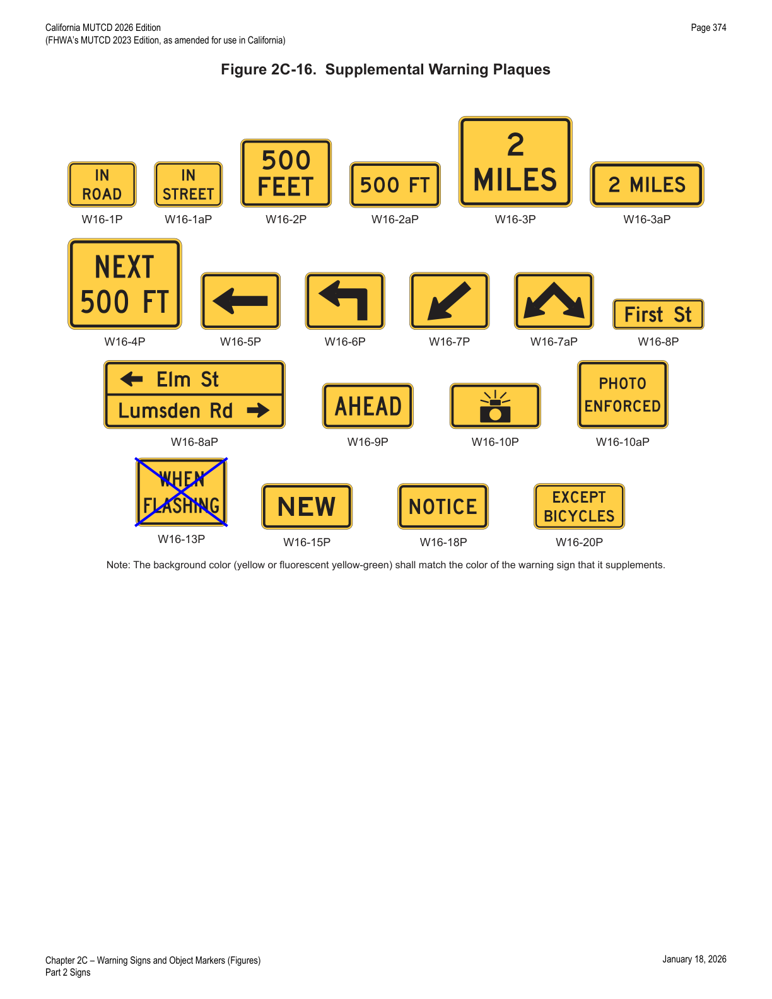
2C.70 Object Marker Design and Placement Height
- 01Types 1, 2, and 3 object markers mark obstructions within or adjacent to the roadway. Type 4 object markers mark the end of a roadway.
- 02When used, object markers (Figures 2C-17 and 2C-17(CA)) shall not have a border and shall be one or more of the following types: Type 1 — a diamond-shaped sign at least 18 inches on a side, either a yellow (OM1-1) or black (OM1-2) sign with nine yellow retroreflective devices (minimum 3-inch diameter each) mounted symmetrically, or an all-yellow retroreflective sign (OM1-3). Type 2 — either a marker (OM2-1V or OM2-1H) with three yellow retroreflective devices (minimum 3-inch diameter each) arranged horizontally or vertically on a white sign at least 6 x 12 inches, or an all-yellow horizontal/vertical retroreflective sign (OM2-2V or OM2-2H) at least 6 x 12 inches. Type 3 — a striped marker, 12 x 36 inches, a vertical rectangle with alternating black and retroreflective yellow stripes sloping downward at 45 degrees toward the side traffic is to pass; minimum stripe width 3 inches. Type 4 — a diamond-shaped sign at least 18 inches on a side, either a red (OM4-1) or black (OM4-2) sign with nine red retroreflective devices (minimum 3-inch diameter each) mounted symmetrically, or an all-red retroreflective sign (OM4-3). Type L(CA) Utility Pole marker (Figure 2C-17(CA)) — yellow retroreflective material consisting of three 2 x 12 inch horizontal rectangles arranged vertically on a utility pole. Type Q(CA) object marker (Figure 2C-17(CA)) — a vertical tubular marker 18 to 24 inches high with a minimum cross-sectional dimension of 2¼ inches; the yellow retroreflective material shall consist of three 3-inch bands or a single 9-inch band.
- 03Type 3 object markers with stripes beginning at the upper right and sloping down to the lower left are right object markers (OM3-R). Those beginning at the upper left and sloping down to the lower right are left object markers (OM3-L). Those with chevron stripes sloping down to both lower corners are center object markers (OM3-C).
- 04When marking obstructions within the roadway, or obstructions 8 feet or less from the shoulder or curb, the minimum mounting height (from the bottom of the marker to the near edge of the traveled way) should be 4 feet.
- 05When marking obstructions more than 8 feet from the shoulder or curb, the clearance from the ground to the bottom of the marker should be at least 4 feet.
- 06Object markers should not present a vertical or horizontal clearance obstacle for pedestrians.
- 07Where object markers or markings apply to an obstruction that by its nature requires a lower or higher mounting, vertical mounting height may vary according to need.
- 08Section 9C.09 covers use of object markers on shared-use paths.
2C.71 Object Markers for Obstructions Within the Roadway
- 01Obstructions within the roadway shall be marked with a Type 1 or Type 3 object marker. In addition to markers on the face of the obstruction, warning of the approach shall be given by appropriate pavement markings (Section 3B.13).
- 01aThe Type Q(CA) object marker may be used to emphasize objects within the roadway — for example, curb noses — where it is desirable that the marker be visible from all directions.
- 02To provide additional emphasis, a Type 1 or Type 3 object marker may be installed at or near the approach end of a median island.
- 03To provide additional emphasis, large surfaces such as bridge piers may be painted with diagonal stripes 12 inches or greater in width, similar in design to the Type 3 object marker.
- 04The alternating black and retroreflective yellow stripes (OM3-L, OM3-R) shall slope down at 45 degrees toward the side on which traffic is to pass the obstruction. If traffic can pass to either side, the stripes (OM3-C) shall form chevrons pointing upward.
- 04aThe OM3-L or OM3-R object marker should be in line with the inner edge of the obstruction.
- 05Appropriate signs (Sections 2B.40, 2C.23) directing traffic to one or both sides of the obstruction may be used instead of the object marker.
- 06If any object marker is located behind the guard rail, all of the marker panel should be visible to approaching traffic.
2C.72 Object Markers for Obstructions Adjacent to the Roadway
- 01Obstructions not actually within the roadway are sometimes so close to the edge of the road that they need a marker — underpass piers, bridge abutments, handrails, ends of traffic barriers, utility poles, and culvert headwalls. In other cases there is no physical object, but roadside conditions such as narrow shoulders, drop-offs, gores, small islands, and abrupt alignment changes might make it undesirable for a road user to leave the roadway, creating a need for a marker.
- 02Type 2 or Type 3 object markers may be used to mark an obstruction adjacent to the roadway.
- 03If a Type 2 or Type 3 object marker is used to mark an adjacent obstruction, the edge of the marker closest to the road user should be installed in line with the closest edge of the obstruction.
- 04When a marker is applied to the approach ends of guardrail or crash cushion terminals, it should have the appearance of a Type 3 object marker and should be directly affixed, without a substrate, to the approach end, generally conforming to its size and shape.
- 05Type 1 and Type 4 object markers shall not be used to mark obstructions adjacent to the roadway.
- 06Standard warning signs in this Chapter should also be used where applicable.
- 07Objects in a paved area within 8 feet of the traveled way may be marked with a Type 3 object marker. Objects outside the paved shoulder, within 12 feet of the traveled way, may be marked with Type 2 object markers.
- 08Type 2 object markers may be placed in front of, alongside, or attached to the object. Where objects are very close to each other, only the first may need to be marked.
- 09The Type L(CA) Utility Pole marker may be used to mark a utility pole.
- 10If used, the utility company should be responsible for installing and maintaining the Type L(CA) Utility Pole marker.
- 11Refer to Sections 2C.10 and 2C.43 for use of Type 1 (OM1-3) object markers with One-Direction Large Arrow (W1-6) and Two-Direction Large Arrow (W1-7) signs for abrupt roadway alignment changes.
- 12Refer to Section 6H.104(CA) for use of Type 1 and Type 3 object markers for temporary traffic control.
- 13If engineering judgment indicates the exit gore at an interchange cannot be negotiated in a reasonable manner, then in addition to Type F and G delineators, an OM3-C object marker may be used, as shown in Figure 3G-102(CA).
2C.73 Object Markers for Ends of Roadways
- 01The Type 4 object marker is used to warn and alert road users of the end of a roadway in other than construction or maintenance areas.
- 02If an object marker is used to mark the end of a roadway, a Type 4 object marker shall be used.
- 03aThe Type 4 object marker shall be used at the end of a road or cul-de-sac street where there is no alternate vehicular path.
- 04Where conditions warrant, more than one marker, or a larger marker with or without a Type 3 Barricade (Section 2B.75), may be used at the end of the roadway.
- 04aRefer to Section 2C.24 for use of the end-of-roadway marker in conjunction with the END (W31(CA)) sign.
- 05The minimum mounting height, measured vertically from the bottom of a Type 4 object marker to the near edge of the traveled way, shall be 4 feet.
- 06Appropriate advance warning signs in this Chapter should be used.
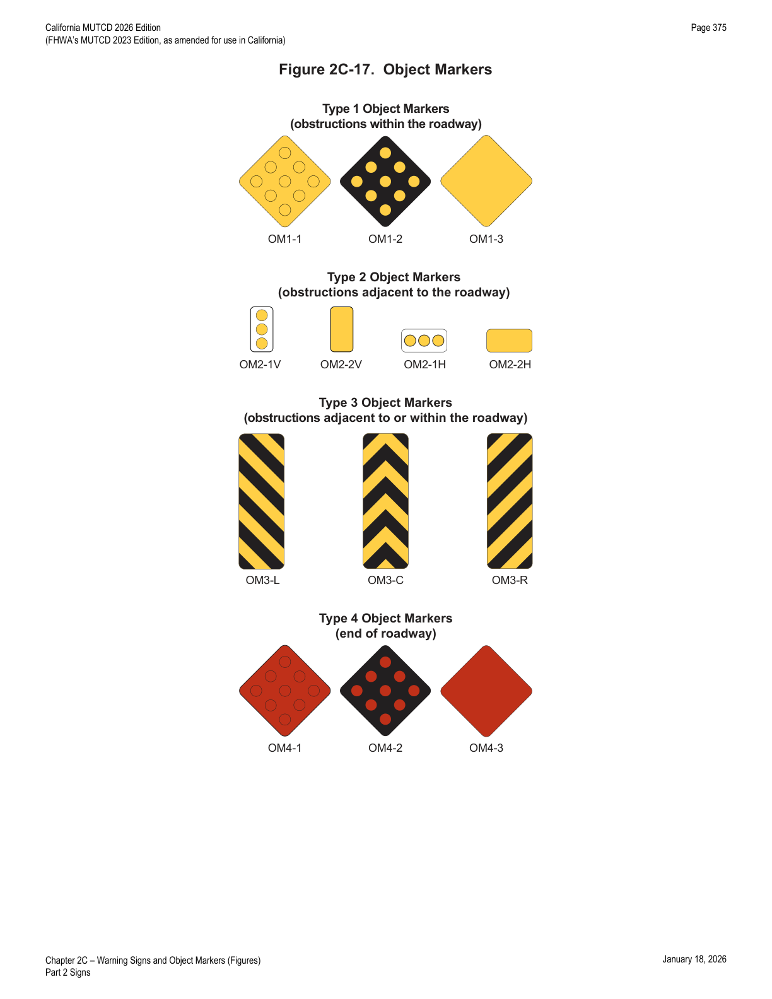
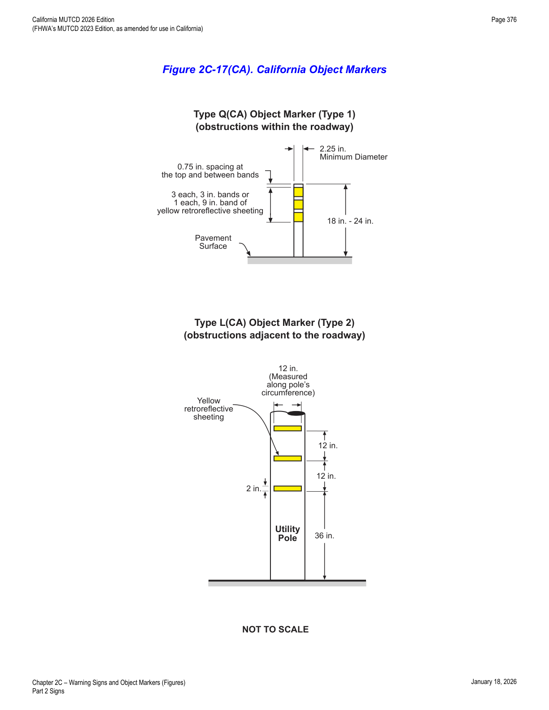
2C.101(CA) TRACTOR-SEMIS OVER ___ FEET KINGPIN TO REAR AXLE NOT ADVISED (SW48(CA))
- 01The TRACTOR-SEMIS OVER ___ FEET KINGPIN TO REAR AXLE NOT ADVISED (SW48(CA)) sign (Figure 2C-6(CA)) may be used on certain specified conventional highways and freeways that have restricted turning radii.
- 02At freeway off-ramps to restricted conventional highways, the SW48(CA) sign shall be installed with a NEXT EXIT (SW48-1P(CA)) plaque.
- 03The SW48(CA) sign should be located far enough in advance of the restricted area to allow the vehicle operator time to select an alternate route.
- 04The NEXT EXIT (SW48-1P(CA)) plaque (Figure 2C-6(CA)) or a Distance plaque may supplement the SW48(CA) sign, as appropriate. Alternate messages for the SW48-1P(CA) plaque may be NEXT RIGHT, SECOND EXIT, SECOND RIGHT, NEXT LEFT, or SECOND LEFT.
2C.102(CA) Weight Limit Signs (W20(CA) and W20A(CA))
- 01The Weight Limit (W20(CA) and W20A(CA)) signs (Figure 2C-6(CA)) may be used in combination with a Distance Plaque, far enough in advance to allow the vehicle operator to select an alternate route.
- 02An alternative route should be evaluated for height, weight, and size restrictions; appropriate signs should be posted along the route to advise motorists of any restrictions.
- 03Refer to Section 2B.64 for regulatory Weight Limit signs.
2C.103(CA) Safety Corridor Sign (SW33(CA))
- 01The Safety Corridor (SW33(CA)) sign (Figure 2C-6(CA)) may be installed at the written request of an official Corridor Safety Task Force on any roadway segment designated as a Safety Awareness Zone under the authority of SHS § 97.1.
- 02More information on Highway Safety Corridors and Task Forces is available from Caltrans.
- 03The SW33(CA) sign shall not be installed on freeways.
- 04When used, one SW33(CA) sign should be posted at each end of the corridor; the sign should be a yellow background with black text carrying a primary safety message.
- 05A secondary message shall be agreed upon by the Task Force; it shall not cover more than 25 percent of the sign's surface area.
- 06Caltrans shall purchase and install the SW33(CA) sign.
- 07The Task Force is to advise Caltrans, in writing, how long the signs are to remain on the highway, but this period should not exceed three years.
★ Key Takeaways — Chapter 2C
- Warning signs are diamond-shaped, black-on-yellow (or black-on-fluorescent-yellow-green for pedestrian/bicycle/school/playground conditions) by default, sized from Table 2C-1/2C-1(CA), and should be used sparingly — overuse breeds sign disrespect.
- Device selection for horizontal curves is not discretionary: Table 2C-4 Chart A (AADT/roadway type) determines whether a device is needed, and Chart B (speed differential) dictates whether pavement markings, an advance warning sign, delineators, or chevrons are required.
- Table 2C-3's advance-placement distances are built from Perception-Response Time and AASHTO stopping/decision-sight-distance models; Condition A (lane-change/merge signs) and Condition B (potential-stop vs. speed-reduction signs) use different PRT and deceleration assumptions, so pick the correct condition column, not just the posted speed row.
- Chevron spacing (Table 2C-5) and the Advisory Speed plaque requirement (Table 2C-6) both key off curve radius/advisory speed and speed differential — 15 mph or more differential makes the W13-1P plaque mandatory, not optional.
- Several federal sign/size table entries were struck by California amendment in this edition — the W2-10/W2-11 Actuated Advance Intersection pair, the W4-8/W9-4 Lanes Merge/Single-Lane Transition pairing, the W16-13P WHEN FLASHING plaque, and the W25-1/2 Extended Green pair no longer have a dedicated Table 2C-1 row (WHEN FLASHING is also affirmatively barred from several sign assemblies elsewhere in the chapter).
- Object markers come in four standard types (yellow/black Type 1 and red/black Type 4 diamonds, white/yellow Type 2, striped Type 3) plus two California-only types (Type L utility pole banding, Type Q tubular marker); Types 1 and 4 are reserved for in-roadway and end-of-roadway use respectively and must not be used for adjacent obstructions.
- Supplemental warning plaques always ride on the same post as, and normally below, the sign they supplement — they are never freestanding — and must match that sign's legend/border/background colors (or black-on-yellow when paired with a regulatory sign).